Node List#
Camera  #
#
Collection of nodes related to 3D-cameras.
Camera #
This is what you’re looking through when rendering or viewing the effect.
The camera that is connected to the Render node determines the viewed angle for the export.
You can use a camera by selecting it in the Camera dropdown menu on top of the viewport.
General#
- Activate / Copy
Activate: This button will use the selected camera in the viewport.
Copy From Active: This button will copy the settings from the camera you’re currently looking through to the selected camera. This can be useful when you used the default camera to frame your effect and then want that orientation quickly translated to your render camera.
Lock: When you are happy with the camera position you can lock the camera so you can’t accidentally move it.
Transform#
Position: Position of the camera in 3d-space.
Yaw Angle: Yaw angle, in degrees. Move perspective left and right.
Pitch Angle: Move perspective up and down.
Roll Angle: Roll angle, in degrees. Rotate perspective.
Near clipping plane: Minimum distance things need to be from the camera in order to be rendered.
Far clipping plane: Maximum distance things can be away from the camera in order to be rendered.
Display#
- Projection: Choose the projection mode of the camera.
- Perspective: Realistic and most commonly used projection method similar to images made with a real camera. Distant objects appear smaller and parallel lines point to a vanishing point.
Field Of View: Field of View in degrees. specifies the angle at which objects are visible to the camera. Adjusting this is like zooming with a telelens.
- Orthographic Projection method where there is no vanishing point and distance doesn’t affect size. It is like a technical illustration or using an infinitely large focal length. Everything is flattened giving a stylized look. This mode can be useful to render distant elements that will be placed on flat planes.
Orthographic width: This determines the size of the orthographic plane which is similar to 2d zooming in or out on an image. Higher values will show more of the scene. This value is also changed by zooming in or out using the camera navigation controls in the viewport.
Display Resolution: Resolution used in the render tab preview. This will also dictate the aspect ratio. Right next to the W and H (width and height) fields is a dropdown menu where you can select a resolution preset for 720p, 1080p or 4k. You can also add your own presets by inputting the desired pixel resolution in the W and H fields and clicking on the
 icon.
icon.- Sensor fit: The way the aspect ratio/film size/sensor size of the imported camera data is fitted into the display resolution of the Camera node. You can try these options when your imported camera doesn’t fit the scene as expected. This parameter only has an effect when the Camera node is controlled by an
 Import node.
Import node. Horizontal: Use this option when the width of the sensor size of the imported camera is larger than the height.
Vertical: Use this option when the height of the sensor size of the imported camera is larger than the width.
- Sensor fit: The way the aspect ratio/film size/sensor size of the imported camera data is fitted into the display resolution of the
Preview#
The parameters in this tab only apply to the displayed image in the Render tab!
These parameters mirror the ones on top of the Render tab.
Preview scale to fit If checked, this will scale the displayed image such that it fills the entire viewport window while keeping the aspect ratio fixed.
Display scale Only works when Preview scale to fit is checked off! This will scale the displayed image up and down.
Backplate#
- Use backplate: Use a backplate as a viewport background when looking through the camera.
Import Backplate: Filepath and name of the backplate or first image in the backplate sequence.
Blend mode: Method for handling transparency when using a backplate with an alpha channel.
Set Display Resolution From Backplate: This button will set the Display Resolution parameter in the Display tab to the pixel resolution of the backplate image. This will ensure that whatever you’re rendering will have the same aspect ratio of the imported backplate. This is needed, for example, if you want to match a tracked camera to a live-action plate.
- Animated backplate: If checked, Embergen will look for an image sequence to be used as backplate clip.
Backplate frame rate: The framerate at which the backplate will be played. If you have a sequence that’s supposed to be played at 30 frames per second, you should set this to 30 which means that the next frame of the image sequence will be played every other frame in Embergen (since Embergen runs at 60 fps).
First frame: Starting frame of the image sequence. You can use positive values to start the image sequence later in the simulation or negative values to trim the first part of you image sequence. Note that this value is relative to the Backplate frame rate so the simulation/timeline frame on which the image sequence starts is (60 / Backplate frame rate x First frame)
Camera: Look At #
This node is a look at position for a camera. When connecting this node to the Control pin on the camera, the camera will always look at the specified focus position.
When connecting a Camera: Look At node to a Camera node the Position, Yaw angle, Pitch angle, and Field of view parameters of the camera will be controlled in the Camera: Look At
Focus Position: Position in 3d-space the camera will be oriented to.
Field of view: Field of view parameter of the connected Camera node.
- Coordinate Space:
- Fixed Position: Will allow for changing the camera’s position relative to the focus position.
Camera Position: Position of the camera. With this, the camera will still always be oriented to the focus position.
- Fixed Orientation: Will allow for changing the camera’s orientation relative to the look-at and reveal the Camera Radius, Yaw Angle, and Pitch Angle parameters.
Camera Radius: Distance from focus position for the camera.
Yaw Angle: This can be used to move around the focus point. By connecting this parameter to a cycle node with a low frequency you can create nice turntable animations.
Pitch Angle: Orient up or down from the focal point viewing it from a higher or lower angle.
Collider #
{kind=link}
This will make the smoke, flames, and particles collide with the shape that’s plugged into the node.
General#
Collider activity: Collider activity. If off, the collider will not collide nor inject velocities.
Ignore collisions: Will bypass the collision mechanism if checked. Useful if the actual collision itself is not needed, but you still want to keep the collider visible for holdouts or visualizations.
Mode: Select if the collider will affect Volume, Particles, or both. For example, when set to Volume, the Volume will collide but the particles will ignore the collider and go straight through it. Note that the particle motion will still look different compared to turning the collider off, because by default the particles are set to be affected by the simulation in the Active Forces tab.
Transform#
- Import control: If checked, the Import control pin will show up on the Collider node, allowing the transformation to be parented to a mesh or bone from the Import node. In the Control tab of the Import node, you can check a bone or mesh to create an output pin on the node. This pin can be connected to the Import control pin.
Position: Displays the incoming position of the parent mesh or bone.
Rotation: Displays the incoming rotation of the parent mesh or bone.
Position, Rotation, Scale Inherit: You can toggle the X, Y, and Z buttons to specify what attribute and axis of the incoming transformation will be inherited/used. All buttons are turned on (blue) by default, inheriting all transformations.
Position, Rotation offset: Add to or subtract from the incoming position and rotation values. These values are also changed when using the transform and rotation manipulators in the viewport.
- Import control: If checked, the Import control pin will show up on the Collider node, allowing the transformation to be parented to a mesh or bone from the
Position: The position of the collider root.
Rotation: The orientation of the collider root, in degrees per axis of rotation.
Position and rotation work as a parent moving and rotating all the shapes connected to the collider node.
Physics#
Velocity transfer: Quantity of velocity injected from the collider shapes motion into the simulation.
Visuals#
- Show collider: Render the collider in the scene. When turned off you can set the collider to only cast shadows:
Shadow caster: Render the shadow of the collider in the scene.
Collider color: Main color of the surface of the collider.
Emit Light: With this checked, the collider can emit light from the inputted shape.
Emissive light color: Color of the emitted light.
Emissive Intensity: Amount of light to be emitted.
Collider #
This will make the smoke or flames collide with the shape that’s plugged into the node.
General#
Collider activity: Collider activity. If off, the collider will not collide nor inject velocities.
Ignore collisions: Will bypass the collision mechanism if checked. Useful if no collision is needed, but the collider needs to be visible for holdouts or visualization.
Mode: Select if the collider will affect Volume, Particles, or both. For example, when set to Volume, the Volume will collide but the particles will ignore the collider and go straight through it. Note that the particle motion will still look different compared to turning the collider off, because by default the particles are set to be affected by the simulation in the Active Forces tab.
Position: The position of the collider root.
Rotation: The orientation of the collider root, in degrees per axis of rotation.
Position and rotation work as a parent moving and rotating all the shapes connected to the collider node.
Physics#
Do collisions: Are collisions active on this collider. Velocity injection (Velocity transfer) is NOT affected by this.
Distance repulse: The distance from which the collider considers collisions. Higher values mean density is collided a further distance from the collision shapes.
Friction: Friction/stickiness of the surface.
Repulsion: Repulsion (bounciness) of the surface.
Velocity transfer: Quantity of velocity injected from the collider shapes motion into the simulation.
Visuals#
- Show collider: Render the collider in the scene. When turned off you can set the collider to only cast shadows:
Shadow caster: Render the shadow of the collider in the scene.
Albedo: Main color of the surface of the collider.
Emit Light: With this checked, the collider can emit light from the inputted shape.
Emissive: Light color.
Emissive Intensity: Amount of light to be emitted.
Color  #
#
Color is a category of nodes outputting color values.
For a detailed explanation on how to use these nodes check out our Color page!
Color 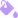
#
{kind=link}
This node represents a color and can be connected to any color parameter.
Color: Pick your color using the Color Picker.
Color Gradient  #
#
Interpolation Color Space: A dropdown menu with different methods of interpolating color from one point in the color gradient to another.
- Color Gradient: Creates a range of colors.
Add a point by
 clicking on the gradient.
clicking on the gradient.Move a point holding
and dragging.Remove a point by selecting it with
and pressing DeleteEdit the color of a point by double-clicking
on it.
For a more detailed explanation on this node and on how to make color gradient presets please check out our Color page!
Color Selector  #
#
Using a  Color: Gradient node as input, outputs a color from the gradient at the given position.
Color: Gradient node as input, outputs a color from the gradient at the given position.
Position: The position on the gradient of where to select the color from.
Emitter 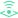
#
{kind=link}
Volume  #
#
This node is responsible for filling the voxels with fuel, smoke, or temperature with the amount specified in the Emission tab.
Multiple emitters can be added to the simulation by connecting them to the Emitters pin on the left side of the Simulation node.
The emitter needs something to emit from. That’s why there is a Shapes pin on the left side of it.
The emission always comes from the connected shape, so a bigger shape also means more emission.
Activity#
Emitter activity: Emitter activity, if set to false that emitter will be ignored.
Duration of burst: Duration of the emission in seconds during the emitter cycle.
Time between bursts: Duration of the pause in seconds during the emitter cycle. By default set to 0 which results in a continuous emission.
Transform#
The connected shapes are parented to the Emitter. So these controls will also move the connected shapes.
- Import control: If checked, the Import control pin will show up on the Emitter: Volume node, allowing the transformation to be parented to a mesh or bone from the Import node. In the Control tab of the Import node, you can check a bone or mesh to create an output pin on the node. This pin can be connected to the Import control pin.
Position: Displays the incoming position of the parent mesh or bone.
Rotation: Displays the incoming rotation of the parent mesh or bone.
Position, Rotation, Scale Inherit: You can toggle the X, Y, and Z buttons to specify what attribute and axis of the incoming transformation will be inherited/used. All buttons are turned on (blue) by default, inheriting all transformations.
Position, Rotation offset: Add to or subtract from the incoming position and rotation values. These values are also changed when using the transform and rotation manipulators in the viewport.
- Import control: If checked, the Import control pin will show up on the
Position: The position of the emitter root.
Rotation: The orientation of the emitter root, in degrees per axis of rotation.
Emission#
- Fuel, Smoke, Temperature emission: Emission method:
No Emission: Emission will be turned off for this channel.
Add: The channel will be added to the voxels based on the emission rate and the input shape.
- Add Clamped: The channel will be added to the voxels, but never exceed the Max Fuel, Temperature, or Smoke rate. Which is a parameter revealed by picking this method:
Max fuel, smoke, temperature: Maximum emission for the channel, the accumulated value will never be above this threshold.
Replace: This will replace the inputted shape voxels completely with the specified density of a channel. This will give more emission than other methods and leaves a clear representation of the emission shape in density.
Fuel, Smoke Rate: The added channel strength. This is the percentage of the value 1.0 for the channel in a voxel to be added every second.
Temperature: The target temperature in Kelvin. Amount of heat added to the simulation. Without temperature, the fuel won’t ignite and no flames will appear. The temperature channel is also responsible for making the smoke and flames rise due to buoyancy.
Emission gradient: Allows for a more natural diffuse emission. Small values will cause the emitted components to match the shape closely, while larger values will emit more diffusely around the shape seemingly growing the emission area. When paired with a Noise force, it allows for a more natural emission.
Smoke Color: Color of the emitted smoke. (Only available when using Colored Smoke as the Simulation Mode in the Simulation tab of the
 Simulation node)
Simulation node)
Pressure#
Additional pressure rate: Additional pressure rate. Positive values will explode, negative values will implode.
Pressure random intensity: Divergence random intensity. Higher values are more chaotic and reduce the overall effect. 100% will turn the additional pressure off.
Pressure random scale: Divergence random scale. Higher values mean smaller details.
Pressure random seed: Unique divergence seed give unique force distribution.
Pressure random speed: Speed of evolution of the chaos. Lower values will change slower.
Forces#
Velocity transfer: Percentage of velocity to be transferred from the inputted shape or emitter motion into the simulation.
Visuals#
- Show emitter: Render the emitter in the scene. When turned off you can set the emitter to only cast shadows:
Shadow caster: Render the shadow of the emitter in the scene.
Emitter color: Main color of the surface of the emitter.
Emit Light: With this checked, the emitter can emit light from the inputted shape.
Emissive light color: Color of the emitted light.
Emissive Intensity: Amount of light to be emitted.
Particles  #
#
This node can emit many particles which can be used to inject densities creating highly detailed and realistic emitters for many effects!
Particles will be emitted from the shape plugged into the Shape pin of this node. If there is no shape plugged in, the particles will spawn from a single point at the emitter root.
The Particle Emitter output pin has to be connected to the Emitters input pin of the 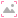 Simulation node and the Particles output pin on the
Simulation node and the Particles output pin on the  Simulation node has to connected to the Particles input pin of the
Simulation node has to connected to the Particles input pin of the
{kind=link}
This node has range sliders and modulation curves. For more information on these please check out our Range Slider and Modulation Curve page!
Emission#
Continuous emission: When active, the continuous emission will be turned off. Only keeping the burst emission if it is active.
Seed: Seed of the random processes in this emitter. For example, if your’re using initial forces in random directions, changing the seed will make the particles move into different directions.
Emission Rate: Particles emitted every second.
Burst emission: When going from false to true, a burst of particles is released.
Burst size: Amount of particles emitted at a burst.
Spawn on surface: Particles will spawn on the surface of the inputted shape instead of within the whole volume of that shape.
Jitter Distance: Maximum distance in meters a particle can be emitted away from the emission shape.
- Emission style: Select a special emission mode for the particles.
Regular: Particles will be emitted evenly.
- Entangled: Particles will be emitted in a stringy way within the emission shape.
Entanglement count: Amount of particles between entangled spawn points. Higher values will put more particles in each drawn line resulting in fewer drawn lines making the effect more apparent.
- Clumped: Particles will be emitted in clumps. The shape of the clumps vary a little based on the inputted shape.
Clumped count: Amount of particles regrouped in a clump. Higher values will result in less more dense clumps making the effect more apparent.
Clump size: Size of the clumps relative to the size of the inputted shape in percentages.
- Emission condition: Dropdown menu of different conditions for emitting the particles.
Always: No emission condition.
- Velocity Higher, Lower Than: Particles only spawn when the velocity of the inputted shape is higher or lower than the velocity set int the Reference velocity parameter.
Reference velocity: Velocity threshold used for the comparison.
Inside, Outside Masking Shape: Only spawn particles if it’s inside or outside the masking shape which can be defined by connecting a shape to the Mask Shapes input pin on the Particles node.
Transform#
- Import control: If checked, the Import control pin will show up on the Emitter: Particles node, allowing the transformation to be parented to a mesh or bone from the Import node. In the Control tab of the Import node, you can check a bone or mesh to create an output pin on the node. This pin can be connected to the Import control pin.
Position: Displays the incoming position of the parent mesh or bone.
Rotation: Displays the incoming rotation of the parent mesh or bone.
Position, Rotation, Scale Inherit: You can toggle the X, Y, and Z buttons to specify what attribute and axis of the incoming transformation will be inherited/used. All buttons are turned on (blue) by default, inheriting all transformations.
Position, Rotation offset: Add to or subtract from the incoming position and rotation values. These values are also changed when using the transform and rotation manipulators in the viewport.
- Import control: If checked, the Import control pin will show up on the
Position: The position of the emitter root. When there is no shape connected to the particle emitter, this will be the spawn point of the particles.
Rotation: The orientation of the emitter root, in degrees per axis of rotation.
Freeze#
Freezing a particle means that it won’t move in space and also won’t inject anything.
Emit Frozen Particles: Particles will be frozen (static) by default, a collision or mask intersection is required to unfreeze them.
Pause until unfreeze: Pause particle life until unfreeze occurs. With this checked, the particle lifespan defined in the Life tab starts counting from the moment of unfreeze instead of the spawn moment.
Unfreeze min simulation force: Minimal volumetric force required to unfreeze particles. Lower values make it more likely the particles will start unfreezing and flowing along the with the densities of the simulation.
Unfreeze min particles force: Minimal force created by force nodes required to unfreeze particles. Higher values need stronger forces to unfreeze the particles.
Unfreeze on collision: Frozen particles will unfreeze on collisions. A collision can be setup using the colliderNode node.
Unfreeze on mask: Frozen particles will unfreeze when they intersect with the mask shapes. The mask shapes can be setup by connecting shapes to the Mask Shapes input pin on the Particles node.
Life#
Lifetime limits: Range of possible lifetimes in seconds. The lifetime indicates how long a particle will occur in a simulation from the moment it’s spawned.
Timing randomness: Randomness of emission timing between 2 consecutive frames. This can be helpful when using fast moving emission shapes. Higher values will spawn particles more randomly between one animation frame and the next reducing stepping.
Initial forces#
Velocities added to the particles when they spawn or unfreeze.
- Initial speed Type: Type of initial forces applied. The options are:
Velocity None: Don’t apply any initial force.
- Velocity Range: Apply a random velocity from within a specified range.
Min speed: Minimum speed added in the specified axis.
Max speed: Maximum speed added in the specified axis.
Extreme speed: Use extreme speeds only. Using this, the randomness of the velocity directions stay the same but the amount of velocity added is based on the extremes of the velocity range instead of everything in between.
- Velocity Cone: Apply a random velocity from within a conical shape.
Inherit direction Inherit the cone direction from the animation. For example, if the emitter is moving to the left the cone will also be oriented to the left.
Cone spreading: The opening/wideness of the cone in degrees.
Cone filling: A value of 0% will move the particles only over the surface of the cone and a value of 100% will move the particles within the whole volume of the cone.
Emission speed limits: Speed range of the particles at emission.
Ellipsoid distribution: Higher values give a rounder distribution. This is expeccially visible when using clumped or entangled.
Speed scale: Speed scale multiplier. Multiplies any initial force. This can be useful to increase an initial force using only one parameter instead of multiple min,max parameters.
Velocity transfer: Velocity transfer from the particle emitter to the particles when spawned. Higher values will add stronger velocities in the direction of the motion of the emitter shape.
Localized force: Amount of randomization for the initial force of particles within a clump or entangled string. 0% will give every particle a random velocity and 100% will give every particle within a clump or entangled string the same random velocity.
Active forces#
There are two “simulations” at work here.

One governs the particle motion based on classical Newtonian mechanics (like the trajectory of a basketball) plus the forces of the Force nodes (if the forces mode is set to Particles or Volume and Particles).
The other is the fluid motion. (like bouyancy and the velocities of the smoke and flames)
This implementation gives the ability to blend between these two “simulations” on a per particle basis using a range of influence. It’s important to understand that the Gravity multiplier, Forces tightness, Gravity intensity, and Velocity damping parameters in this tab apply only to the “classical” particle motion as mentioned above.
For example, if you set the Volume parameter to 0%, you will get the “basketball” behavior, and if you set it to 100%, the particles will strictly “float” along with the fluid motion, ignoring the other parameters in this tab.
Volume: Range for the physics type of particles. Particles with 100% will follow 100% of the simulation flow, 0% will completely ignore the simulation flow.
Gravity multiplier: Amount of gravitational force applied. Every particle will get a gravitational force assigned from within this random range. Higher values mean that the particles move down faster with gravity.
Forces tightness: When set to 100%, forces will be used as velocities. When set to 0%, forces will be used as accelerations. Lower values will cause the particles to more strictly follow the shape of the forces velocities. Note that the forces mode needs the be set to Particles or Volume and Particles.
Velocity damping: Percentage of velocity lost per second. This will slow particles down over time and can be useful to simulate drag.
Collisions#
A collision can be setup using the colliderNode node.
Particles bounciness: Range of bounciness. 0% will stop the incoming particle, 100% will have the particle bounce off with the full inverted velocity.
Particles friction: Range of friction. Higher values will make the particles stick more to the collider.
Bounce randomization: Chances of deviating from the perfect logical bounce direction and going into another direction.
Repulsion distance: Distance of the repulsion field around colliders. Higher values will make the particles repulse further around the shape.
- Repulsion intensity: Intensity of the repulsion force on the particles. Higher values will make the particles repulse away from the collider surface, negative values will attract to the collider surface.
If Repulion distance or Repulsion intensity are set to 0, the repulsion field will not affect the particles.
- Non ground bounds/Ground bound: Define the behavior of the particles when hitting a bounding box face.
Ignore: Particles will just fly through the bounds as if they are not there.
Kill: Particles will disappear when hitting a bound.
Stop: Particles stop when hitting a bound so that they are not able to move past it. They are still able to move in other directions.
Bounce: Particles collide with a bound based on the parameters above.
Shape#
In this tab, you can change the way the particles look in terms of shape.
Note that only the Size limits parameter has an effect on the simulation (bigger particles inject more) the other parameters only change the way the particles look in the render without having an effect on the simulation.
Display scale multiplier: Global scale of the particle render size.
- Size limits: The size of a particle will be randomly picked within this range.
Size by life modulation: This curve represents the particle life on the horizontal axis (with birth in the left size and death on the right side) and the percentage of the particle scale (based on the size limits) on the vertical axis (0% at the bottom and 100% at the top).
Sharpness: Sharpness of the rendered particles. a value of 100% will turn the particles into sharp circles. 0% will turn the particles into soft dots.
Roundness: Higher values make the particles look more like 3D spheres. (Not visible when combined with a high sharpness value.)
- Particles render type: Rendering method of the particles:
Camera Aligned: Sprites are always facing the camera.
Camera Aligned Fixed Size: Sprites are always facing the camera and always the same scale regardless of the proximity of the camera.
- Velocity Aligned: Sprites are oriented along their velocity. This will reveal the following parameters:
- Blur type: Adds different types of blurring to the sprite:
Velocity scale: Influence of the velocity on the stretching of the particle.
Velocity limit: Maximum particle stretching allowed.
Velocity Aligned Fixed Size: Sprites are oriented along their velocity and always the same scale regardless of the proximity of the camera.
Rendering#
This tab controls the way the particles are rendered and their colors.
Render particles: Toggle for displaying the particles or not.
- Particles Type: Dropdown of the particle rendering types:
- Lit: Particles will interact with the light and can cast shadows.
Cast Shadows: Particles will contribute to the volumetric occlusion. This will toggle the particles casting shadows or not.
Particles occlusion: Particles occlusion used for the computation of the shadow. Percentage of the shadowing effect.
- Emissive: Particles can inject light into the scene, lighting up the smoke.
Inject light in scattering: Particles will contribute to the volumetric lighting or not.
Emissive boost: Boosting the color of the particles resulting in brighter particles that also emit more light.
- Particles blend type: Blending mode/merge operation of the particles.
- Translucent: Particle color is blended with the background according to the alpha amount. The following parameters show up at the bottom of the tab when using Translucent or Translucent Additive:
Opacity: Lower values will make the particles look more transparent.
Alpha attenuation over life: Alpha attentuation of the particles over their lifetime, 100% will make the particles disappear completely by the end of their life.
Additive: Particle color is added on the rendering. Giving a brighter, more magical look.
Translucent Additive: Background intensity is reduced according to the alpha amount and particle color is added on top of it. So you can do both scenarios : with alpha, it will reduce background intensity before blending in, without alpha: it will just be additive.
- Initial color type: Method of interpreting the Color Gradient connected to the Initial Color parameter:
Uniform Color: Uses a single color (So you can’t use a color gradient.) for all particles.
Random Per Particle: Each particle gets a random color from the Color Gradient assigned.
Per Particle Matching Size: The color of each particle is mapped to the Color Gradient based on it’s size. (left to right = small to large)
Per Particle Matching Lifetime: The color of each particle is mapped to the Color Gradient based on it’s lifetime. (left to right = short to long lifespan)
- Position Based: When emitted particles are mapped to the gradient based on their position on a 3d noise. This will reveal the following parameters:
Noise frequency: Frequency of the noise. Higher values mean larger areas that will emit the same color.
Noise speed: Animation speed of the noise. A value of zero is non-animated noise. Higher values result in areas emitting different colors more frequently.
- Cycle With Time: Will emit the different gradient colors over each cycle of time. Picking from the Color Gradient points from left to right every cycle. This will reveal the following parameter:
Cycle duration: Duration of a color cycle.
Ping Pong With Time: Will emit the different gradient colors over each cycle of time. Picking from the Color Gradient points from left to right and then from right to left every other cycle. This method also uses the Cycle Duration parameter.
- Velocity Based: Pick the color based on the velocity of the emitter. When the emitter moves faster the emitted particles will get a color assigned more towards the right of the Color Gradient.
Max speed: Upper speed of the remapping ramp. Lower values mean that the emitter needs less velocity to get particles spawned with a color more towards the right side of the Color Gradient. So if you see only colors from the left side of your gradient, try decreasing this value. And if you see only colors from the right side of your gradient, try increasing this value.
Initial color: Color of the spawned particles. Expose this parameter to connect a Color Gradient to it.
- Modulation type: A multiplication of the color values based on the Color Gradient connected to the Modulation Color parameter :
Uniform Color Modulation: All particles are modulated evenly and not multiplied by the Modulation color
- Modulation Over Life: At the start of their life every particles color is multiplied with the left side of the Color Gradient gradient and at the end of their life with the rigth side of the Color Gradient. For example, when using a Color Gradient that fades from white to black from left to right, particles will fade out over their lifespan.
Flip modulation gradient: This will interpret the Color Gradient from right to left instead of left to right.
Modulation over life limits: With this you can set the range for interpreting the life values to be mapped to the gradient. This can be useful when the lifespan is mapped to a too small area of the gradient for example.
- Modulation Over Size: Particles from small to big will be multiplied with the gradient color from left to right.
Modulation over size limits: With this you can set the range for interpreting the size values to be mapped to the gradient. This can be useful when the size is mapped to a too small area of the gradient for example.
- Modulation Over Speed: Particles from slow to fast will be multiplied with the gradient color from left to right.
Modulation over speed limits: With this you can set the range for interpreting the speed values to be mapped to the gradient. This can be useful when the speed is mapped to a too small area of the gradient for example.
Modulation color: Color used to muliply the initial color with. Expose this parameter to connect a Color Gradient to it.
Alpha attentuation over life: Alpha attenuation of the particles over their lifetime, 100% will make the particles go transparent by the end of their lifetime.
Color attentuation over life: Color attenuation of the particles over their lifetime, 100% will make the particles go black by the end of their lifetime.
Injection#
Inject velocities & components: If active, the particles will inject velocities and component densities into the simulation. Particles with a larger size (set with the Size limits parameters in the Shape tab) will inject more.
Smoke, Fuel, Flames: Inject smoke, fuel or flames density into the simulation. This is in percentages of the maximum amount of density that can be added for this particle amount and size. Having a non 0 value here will reveal a modulation curve where you can you can map the injection based on the particles age.
- Initial temperature type: Dropdown of the different methods for mapping the Temperature range to the particles.
Uniform Temperature: Uses a single temperature (the max temperature of the Temperature range) for all particles.
Random Per Particle: Each particle gets a random temperature from the Temperature range assigned.
Per Particle Matching Size: The temperature of each particle is mapped to the Temperature range based on it’s size. This is done using the Temperature ramp with the horizontal axis representing small to large and the vertical axis representing the lowest to the highest value of the Temperature range.
Per Particle Matching Lifetime: The temperature of each particle is mapped to the Temperature range based on it’s lifetime. This is done using the Temperature ramp with the horizontal axis representing birth to death and the vertical axis representing the lowest to the highest value of the Temperature range.
- Position Based: When emitted particles are mapped to the Temperature range based on their position on a 3d noise. This will reveal the following parameters:
Noise frequency: Frequency of the noise. Higher values mean larger areas that will emit the same Temperature.
Noise speed: Animation speed of the noise. A value of zero is non-animated noise. Higher values result in areas emitting different temperatures more frequently.
- Cycle With Time: Will emit the all different values in the Temperature range from min to max over each cycle of time. This will reveal the following parameter:
Cycle duration: Duration of a Temperature range cycle.
Ping Pong With Time: Will emit all different values in the Temperature range altering from min to max, and from max to min over every other cycle of time. This method also uses the Cycle Duration parameter.
- Velocity Based: Pick the temperature based on the velocity of the emitter. When the emitter moves faster the emitted particles will get a temperature assigned more towards the right side of the Temperature range.
Max speed: Upper speed of the remapping ramp. Lower values mean that the emitter needs less velocity to get particles spawned with a temperature more towards the right side of the Temperature range. So if you see only temperatures from the left side of your gradient, try decreasing this value. And if you see only temperatures from the right side of your gradient, try increasing this value.
Temperature: Range of possible temperature values that can be assigned to a particle.
Velocity: Inject the particles velocities into the simulation. Higher values add stronger velocities. This can give an accelerating effect when the particles are also affected by the simulation. Having a non 0 value here will reveal a modulation curve where you can you can map the injection based on the particles age.
Export  #
#
Render  #
#
This is where the image files can be rendered and exported with various settings.
Adjustments made here are only visible in the Render tab of the viewport.
Render Passes#
A render pass (also known as AOV or capture type) contains specific information about the scene. These can be very helpful when using the effect in your compositing software or game engine.
For a detailed description on how to use this tab for the Render Pass mapping, please check out our Render Pass Mapping page!
- The following is a list of all available render passes:
Render Viewport: Renders all elements, giving the same result as what you see in the Scene tab.
Render All: Final shading.
Smoke: Renders only the smoke component, disabling flames and fuel rendering.
Emissive and Scattering: Emissive and Scattering render passes composited together.
Emissive: Flames pass.
Scattering: Light contribution of flames or emissive shapes on the smoke.
Direct Light: All light contribution except ambient light.
Ambient Light: Light contribution of the Light: Ambient node.
Alpha: Transparency channel.
Depth: Visible voxels mapped to their distance from the camera. Higher values are closer to the camera and lower values are further away.
Motion Vector: Describes the motion of each pixel from one frame to the next. This can be used in other software packages to interpolate between frames and reduce stepping.
Six Point 1 (TLR): Interpretation of the normals based on six angles. This pass maps top, left, and right to RGB. This can be used in compositing for easily masking specific sides of your effect.
Six Point 2 (BBF): Interpretation of the normals based on six angles. This pass maps bottom, back, and front to RGB. This can be used in compositing for easily masking specific sides of your effect.
Six Point Normal Map: Interpretation of the normals based on six angles used as an input for a flipbook shader in other 3d-packages.
Gradient Based Normal Map: Interpretation of the normals based on a gradient used as an input for a flipbook shader in other 3d-packages.
Albedo: Color values of the smoke.
Smoke Mask: Density map for the Smoke channel.
Flames Mask: Density map for the Flames channel.
Temperature: Density map for the Temperature channel.
Render Shapes: Final shading of the shapes.
Direct Light Shapes: All light contribution to the shapes except ambient light..
Ambient Light Shapes: Light contribution of the Light: Ambient node to the shapes.
Emissive Shapes: Emission value of the shapes. Shapes can be set to be emissive in the Visuals tab of the Emitter or Collider node.
Scattering Shapes: Light contribution of flames or emissive shapes on the shapes.
Emissive and Scattering Shapes: Emissive and Scattering values for the shapes added together.
Shadow Shapes: Outputs a shadow pass for the shadows cast onto the shapes. This can be used in compositing to make it seem like your effect is casting a shadow in your shot.
Alpha Shapes: Transparency channel for the shapes.
In the Render tab of the viewport, you can preview all render passes by selecting them in the dropdown menu at the top of the viewport.
Export#
- Export Mode The following export modes are available:
- Flipbook: Method of exporting used in game engines where every frame of the timeline has its own square on one big image file.
Flipbook Size: Resolution of the flipbook image. The width and height resolutions per flipbook frame is this value divided by the number of rows and columns.
Flipbook Columns/Rows: The number of columns/rows (horizontally/vertically aligned frames) in the flipbook. Columns x Rows = Maximum amount of frames

- Sequence: Method of exporting used in video where every frame gets its own image file.
Image Size: Pixel resolution of each image file for the sequence.
Right next to the W and H (width and height) fields is a dropdown menu where you can select a resolution preset for 720p, 1080p or 4k.
You can also add your own presets by inputting the desired pixel resolution in the W and H fields and clicking on the  icon.
icon.
First Frame: First frame in the timeline that will be exported.
Number of Frames: Total amount of frames that will be exported.
Frame Stride Number of frames between exported frames. A value of 1 means that all consecutive frames will be exported, a value of 2 means that every other frame is exported, etc.
Numbering offset: Offset applied to the frame numbers used in the resultant filenames. For example, if this parameter is set to 1000 the first file in the sequence will use the number 1000, the second file 1001, etc.
Absolute Frames When enabled, the absolute timeline frame number is used instead of incrementing from 0.
Specifying the Frame Range:
- The are two ways to specify the range of frames to be exported:
Each Render node is represented in the Timeline Editor as a blue bar showing the range of frames to export. It can be dragged and resized by
clicking and dragging.The First Frame and Number of Frames parameters in the Export tab of the Render node can be used to specify the range. For example, if you want to export frames 230 to 450 you set First Frame to 230 and Number of Frames to 221 (450 - 230 + 1).

- Directory The Directory and Filename fields can be used to set the directory and name of your exported file(s). The directory can be set by typing it into the text field or by browsing for it in the explorer that pops up when clicking on the icon. You will want to export your files locally. If you are exporting to a network drive this can cause instability in simulations and renders, this is the case for all file types. The file format can be set to one of the following:
.png: recommended for smaller file sizes
.tga: recommended for faster exports
.exr: for uncompressed or HDR workflows
{kind=link}
When .exr is selected for the filetype and Multi Layer or Multi Part is selected in the EXR Type dropdown menu, the render passes will be exported to layers within one file. For the other file formats, each layer will be exported to a separate file.
Because an export process will often result in multiple output files, the Directory and Filename fields can use variables in order to systematically assign names to the output files and folders.

These variables can be added by picking them from the dropdown menu that appears when you  click within a text field.
click within a text field.
This dropdown menu shows the variable on the left side and an example of the variable result on the right side.
You can see an example of the resultant export filename by looking at the text right next to the icon.
{kind=link}
- The following built-in variables can be used:
$(project)will be replaced by the .ember project filename.$(projectdir)will be replaced by the filepath of the .ember file. Adding\..will move a folder upwards.$(date)will be replaced by the current date (year-month-day).$(variation)will be replaced by the current variation. For more information on exporting variations please check our Randomization section!$(name)will be replaced by the layer name. This variable is not available and will not be resolved for EXR Multi Layer or Multi Part files since they store all layers in one file.$(safename)will be replaced by a “safe” version of the layer name. This will only include alphanumeric characters, replace&and+withand, and convert any other character to underscores. This variable is not available and will not be resolved for EXR Multi Layer or Multi Part files since they store all layers in one file.A sequence of
#will be replaced by the frame number starting with 0. The number will be padded with zeros until there are as many digits as#characters. If Absolute Frames is checked then the simulation step number will be used (i.e. the first value will be equal to First Frame instead of 0).
Example:
On 2023-02-23 I’m working in a file called myEmbergenProject_04.ember which is located on my computer at C:\Projects\myEmbergenProject\projectFiles\Ember I want to export a couple of render passes to png one of which being Render All.
In the Directory field I put the following text $(projectdir)\..\..\EXPORTS\$(date)\$(project)\$(name)
In the Filename field I put the following text $(project)_$(safename)_### and I set the extention in the dropdown next to it to .png
After I exported, I want to have a look at frame 1 of my Render All render pass which I will find in this place with this name:
C:\Projects\myEmbergenProject\EXPORTS\2023-02-23\myEmbergenProject_04\Render Viewport\myEmbergenProject_04_render_viewport_001.png
Custom variables can be set up in Settings > Preferences > User Variables. Check out our User Variables section for more details.
Export to file: The blue Export Now button will start the exporting of the files. The Open Folder button will open the file browser at the location where the files are or will be located.
If you have multiple export nodes you can box-select them all in the Node Graph, then go right-click on the nodes and select Export All. Alternatively the Export All button under Node Details can be used (it only appears if multiple export nodes are selected).
Render Settings#
Parameters for this tab will vary based on the currently selected render passes in the Render Passes tab.
This tab therefore can be used to easily find the relevant parameters for the selected render passes.
All the parameters displayed here can also be found in the Render tab of the viewport after clicking the  icon right next to the render passes dropdown.
icon right next to the render passes dropdown.
Common Parameters:
These parameters will appear regardless of the render pass selection.
- Alpha Blending Mode:
Premultiplied Alpha: also known as Composite Alpha, is expected to be blended in the following way:
final_color = sampled_color + background_color * (1 - sampled_alpha)i.e. the alpha is already multiplied in compared to regular alpha blending. In premultiplied mode, the flames are NOT part of the alpha channel and will simply be added on top of the rendering.- Straight Alpha
- Emissive Alpha Mode:
None: The emissive pass doesn’t add anything to the alpha channel.
Black to Alpha: Everything that’s not black in the emissive pass will be added the the alpha channel.
Luminance: Emissive pass is added to the alpha channel based on its luminance.
Invert Render Alpha: Invert the alpha channel, so you can use it as a mask and multiply by the background color before adding the render layer in RGB, giving you a premultiplied alpha blending.
- Shapes Rendering: Rendering method for the shapes.
Ignore: Not rendered
Regular Lit: Blocking smoke and flames behind and lit by all lights.
Regular Unlit: Blocking smoke and flames behind and doesn’t receive any light. Uses the Albedo color specified in the Visuals tab of the Emitter or Collider node.
Regular Black: Blocking smoke and flames behind and doesn’t receive any light.
Holdout: Blocking smoke and flames behind and cutting the shapes out from the alpha channel. This can be useful in compositing when you have shapes that should move through the smoke or flames.
Shapes Masking: When rendering shapes, masking of the parts covered by the volumetric.
Invert Shapes Alpha: Invert the alpha channel, so you can use it as a mask and multiply by the background color before adding the render layer in RGB, giving you a premultiplied alpha blending.
The following parameters can be useful when working with particles from the Particles node.
For example, you can use multiple Render nodes so you can use the below settings to render the volume and the paricles seperately for more control in compositing.
Volume Occlude Particles: Determines if the particles are occluded by the volume. Unchecking this will remove the shadows on the particles casted by the smoke.
Particles Occlude Volume: Determines if the volume is occluded by the particles. Unchecking this will remove the shadows on the smoke casted by the particles.
Render Volume: Determines if the volume is rendered. (smoke,flames)
Render Particles: Determines if the particles are rendered.
Depth:
Depth Min: Minimal depth used by the exported range. Every depth under this value will be clamped to 0.
Depth Max: Maximal depth used by the exported range. Every depth above this value will be clamped to 1.
Motion Vector:
MV outer blur radius: Outer blur radius of the motion vector, used to expand the area covered by the motion vectors.
MV inner blur radius: Inner blur radius of the motion vector, used to remove unwanted details.
Six Point:
Six points world space: When true, the light directions will be in world space and not relative to camera orientation.
Six points black background: When true, the background is black and the light is multiplied with the alpha of the smoke. When false, the light is adjusted to be independent of the alpha of the smoke.
Smoke density boost: Smoke density multiplier. This can be useful when working with very thin smoke.
Exposure adjustment: Offset the brightness.
Gamma adjustment: Adjust the interpolation from the black point to the white point.
Blacks adjustment: Offset the black point. Useful for remapping the values.
Whites adjustment: Offset the white point. Useful for remapping the values.
Per direction parameters: Whether to use Shadowing intensity for all directions or the separate shadowing intensity parameters for each direction.
Shadowing intensity: Global intensity of the shadowing, used to reconstruct the normals. You can turn this up when the pass is too bright and blowing out all the details.
Top, Right, Left, Bottom, Back, Front Shadowing intenity: Intensity of shadowing for the specific sides.
Six Point Normal Map:
Normal shadowing intensity: Global intensity of the shadowing, used to reconstruct the normals. Be aware that too strong shadowing will concentrate all the details only on the edges and too weak shadowing will create areas that will cancel each other.
Normal smoke density boost: Smoke density multiplier. This can be useful when working with very thin smoke.
Normal intensity: Intensity of the reconstructed normal.
Normalize normal: With this on, the map is forced to use the whole range of color.
Gradient Based Normal Map:
Low frequencies: Low frequencies details contribution to masking.
Medium frequencies: Medium frequencies details contribution to masking.
High frequencies: High frequencies details contribution to masking.
Smoke Mask:
Smoke range min: Minimum smoke density used by the exported range.
Smoke range max: Maximum smoke density used by the exported range.
Flames Mask:
Flames range min: Minimum flames density used by the exported range.
Flames range max: Maximum flames density used by the exported range.
Temperature:
Temperature range min: Minimum temperature used by the exported range.
Temperature range max: Maximum temperature used by the exported range.
Scattering Shapes:
Ground receives scattering: If checked, the light of the flames hitting the ground plane is added to the render pass.
Shadow Shapes:
Shapes cast shadows: If checked, all shadows cast by shapes are added to the shadow pass. This can be useful to uncheck if you need a shadow pass to only composite the shadows of your volumetric effect.
Ground receives shadow If checked, shadows cast on the ground plane are added to the shadow pass.
VDB 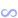
#
{kind=link}
This node represents the ability to export a VDB. A VDB file stores the voxel data and can be used to import your 3d volumetrics into other 3d-packages.
For a detailed description on how to export VDB files check out our exportVDB page!
Export#
Directory The Directory and Filename fields can be used to set the directory and name of your exported file(s). The directory can be set by typing it into the text field or by browsing for it in the explorer that pops up when clicking on the icon. You will want to export your files locally. If you are exporting to a network drive this can cause instability in simulations and renders, this is the case for all file types.
Variables can be used to dynamically name the files and directories.
These variables can be added by picking them from the dropdown menu that appears when you  click within a text field.
click within a text field.
This dropdown menu shows the variable on the left side and an example of the variable result on the right side.
- The following built-in variables can be used:
$(project)will be replaced by the .ember project filename.$(projectdir)will be replaced by the filepath of the .ember file. Adding\..will move a folder upwards.$(date)will be replaced by the current date (year-month-day).A sequence of
#will be replaced by the frame number starting with 0. The number will be padded with zeros until there are as many digits as#characters. If Absolute Frames is checked then the simulation step number will be used (i.e. the first value will be equal to First Frame instead of 0).
Custom variables can be set up in Settings>Preferences>User Variables for a description on this check out our User Variables section.
Export to file: The Export Now button will export the VDB for the selected export node. The Open Folder button will open the file location (using your file browser) of the exported or to be exported VDB file.
First Frame: First frame that will be exported.
Num Frames: Total number of frames that will be exported.
The framerange can also be set by  clicking and dragging the blue bar in the timeline.
clicking and dragging the blue bar in the timeline.
Frame Stride: Number of frames between exported frames. A value of 1 means that all consecutive frames will be exported, a value of 2 means that every other frame is exported.
Numbering offset: Offset applied to the frame numbers used in the resultant filenames. For example, if this parameter is set to 1000 the first file in the sequence will use the number 1000, the second file 1001, etc.
Use Absolute Frames: When active, it uses time step instead of incrementing from 0.
Controls#
Export Density, Temperature, Fuel, Flames, Velocity: If checked, the channel will be exported to the VDB file. By default only Export Density and Export Flames are checked because these are the only two channels needed to render most simulations.
Density, Temperature, Fuel, Flames, Velocity name: Here, you can rename the channels so thay show up with different names in your target application.
Density, Temperature, Fuel, Flames, Velocity grid class: Tag for use in specific target applications and workflows. Doesn’t change the data.
Single velocity grid: If checked, only one vector grid will be used for velocity. Otherwise, three scalar grids will be used, one for each component.
Coordinate System: Coordinate system used in the file. This should be set to the coordinate system you’re exporting to. For example, when exporting to Maya it should be set to Y Up Right Handed.
Length Unit: Length unit of the exported file. This determines the scale when importing the VDB and should be set to the length unit of the 3d-package you’re exporting to. For example, when exporting to Maya it should be set to Centimeters.
Advanced#
Remap values: Using this, you can remap a desired range of densities for each channel to the 0 to 1 range in the VDB data using the min,max sliders. Densities above the range will have values above 1 densities below the range will be removed.
For detailed information on how to use the histogram, please check out our Histogram page.
Threshold: Minimum value for a cell (voxel) to be exported, any cell containing less density than that threshold will not be exported.
Particles 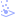
#
{kind=link}
This node can store particles into an Alembic file.
The node is setup by connecting the Particles input pin to the Particles output pin on the Simulation node.
Export#
Directory The Directory and Filename fields can be used to set the directory and name of your exported file(s). The directory can be set by typing it into the text field or by browsing for it in the explorer that pops up when clicking on the icon. You will want to export your files locally. If you are exporting to a network drive this can cause instability in simulations and renders, this is the case for all file types.
Variables can be used to dynamically name the files and directories.
These variables can be added by picking them from the dropdown menu that appears when you  click within a text field.
click within a text field.
This dropdown menu shows the variable on the left side and an example of the variable result on the right side.
- The following built-in variables can be used:
$(project)will be replaced by the .ember project filename.$(projectdir)will be replaced by the filepath of the .ember file. Adding\..will move a folder upwards.$(date)will be replaced by the current date (year-month-day).A sequence of
#will be replaced by the frame number starting with 0. The number will be padded with zeros until there are as many digits as#characters. If Absolute Frames is checked then the simulation step number will be used (i.e. the first value will be equal to First Frame instead of 0).
Custom variables can be set up in Settings>Preferences>User Variables for a description on this check out our User Variables section.
Export to file: The Export Now button will export the VDB for the selected export node. The Open Folder button will open the file location (using your file browser) of the exported or to be exported VDB file.
Single file: If checked, all frames will be stored in a single file instead of a sequence of files.
Use Absolute Frames: When active, it uses time step instead of incrementing from 0.
Automatic frames: If checked, this uses the absolute timeline frame number instead of incrementing from 0.
First Frame: First frame that will be exported.
Num Frames: Total number of frames that will be exported.
The framerange can also be set by  clicking and dragging the blue bar in the timeline.
clicking and dragging the blue bar in the timeline.
Frame Stride: Number of frames between exported frames. A value of 1 means that all consecutive frames will be exported, a value of 2 means that every other frame is exported.
Numbering offset: Offset applied to the frame numbers used in the resultant filenames. For example, if this parameter is set to 1000 the first file in the sequence will use the number 1000, the second file 1001, etc.
Controls#
Export colors: If checked, the particle color values will be exported. Colors can be assigned in various ways using the parameters in the Rendering tab of the Emitter: Particles node.
Export densities: If checked, the particles transparency values will be exported. Alpha can be assigned in various ways using the parameters in the Rendering tab of the Emitter: Particles node.
Export lifetimes: If checked, the particles lifetime values will be exported. This indicates the remaining lifetime in seconds every frame. Lifetime can be set up in the Life tab of the Emitter: Particles node.
Export sizes: If checked, the particles sizes detemined by the Sized limits parameter in the Shape tab of the Emitter: Particles node. Note that the Display scale multiplier parameter isn’t used for exporting.
Coordinate System: Coordinate system used in the file. This should be set to the coordinate system you’re exporting to. For example, when exporting to Maya it should be set to Y Up Right Handed.
Forces  #
#
Forces add velocities into the simulation influencing the flow of the densities.
Forces can be plugged into the  Simulation node to affect the whole simulation or into the
Simulation node to affect the whole simulation or into the  Emitter: Volume node to have an effect only within the volume of the shape connected to the emitter.
Emitter: Volume node to have an effect only within the volume of the shape connected to the emitter.
All forces can be masked by shapes by connecting a shape to the Mask Shapes input pin on the left side of the node. The force will then only be applied within the volume of that shape.
Line #
{kind=link}
This node represents a line force field.
General#
Force activity: The force will be ignored if this is set to false.
Tether Mask Shapes: Will parent the Mask Shape to the force’s transform.
Show Force Mask: If checked, the Mask Shape is shown in the viewport in green. This can be useful to preview where your force will apply.
Mode: Select if the force will affect Volume, Particles, or both.
Push Strength: How strongly to push along the line. Negative values will reverse the direction.
Twist Strength: How strongly to twist around the line. Negative values will twist the other way around.
Repel Strength: How strongly to repel away from or attract towards the line. Positive values will push away from the line. Negative values will pull towards the line.
Additional pressure rate: Injection of positive or negative pressure into the simulation. Positive values will explode, negative values will implode.
- Falloff: Falloff means the force will only affect the simulation from a specified distance from the line. Using this reduces the force a lot so you might have to adjust the strength to compensate.
None: No falloff the force is affecting the whole simulation.
Linear: Force intensity falls off linearly.
Quadratic: Force falls off over a quadratic (exponential) curve. Which is a quicker decrease in force than linear.
- Cubic: Force falls off over a cubic curve. Linear, Quadratic, Cubic and Custom expose the following parameters:
- Use segment: With this checked you can specify the length of the line for the line force.
Segment length: Length of the line segment. Everything outside this segment won’t be affected by the force.
Inverse falloff: If true, the force will be reduced as you come near the line.
Falloff percent: Amount of force to be removed outside the falloff range.
Falloff distance: Distance of the falloff in meters.
Falloff inner bound: Distance from the line in meters where the forces are maximal.
- Custom: Force falls off over a specified exponent.
Falloff exponent: Ramp exponent of the falloff, higher values mean a quicker force extinction. This can be seen as the gamma value of a curve.
Transform#
- Import control: If checked, the Import control pin will show up on the Force: Line node, allowing the transformation to be parented to a mesh or bone from the Import node. In the Control tab of the Import node, you can check a bone or mesh to create an output pin on the node. This pin can be connected to the Import control pin.
Position: Displays the incoming position of the parent mesh or bone.
Rotation: Displays the incoming rotation of the parent mesh or bone.
Position, Rotation, Scale Inherit: You can toggle the X, Y, and Z buttons to specify what attribute and axis of the incoming transformation will be inherited/used. All buttons are turned on (blue) by default, inheriting all transformations.
Position, Rotation offset: Add to or subtract from the incoming position and rotation values. These values are also changed when using the transform and rotation manipulators in the viewport.
- Import control: If checked, the Import control pin will show up on the Force: Line node, allowing the transformation to be parented to a mesh or bone from the
Position: The position of this line force.
Rotation: The rotation of the line force in degrees along the X, Y, and Z axes. Determines the direction of the force.
Chaos#
Chaos varies the intensity of the force based on a 3D noise.
Chaos scale: Size of the force chaos. Higher values mean less detail and bigger variations.
Chaos animation speed: Animation speed of the chaos, higher values will change the noise more often.
Chaos intensity: Intensity of the chaos, higher values mean more randomness.
Chaos seed: Seed used to generate the chaos noise pattern. Each seed gives a different randomness.
Masking#
Constant mask: Percentage of force influence on all channels.
Velocity, Temperature, Smoke mask Percentage of force influence based on velocity, temperature, or smoke. The force is masked based on the presence of these attributes. Negative values will make the force weaker over these attributes.
Reference to the Visual tab:
Visual Visualize the velocities added by this force. This only works when the node is connected, active, and selected.
Toroidal #
{kind=link}
General#
Force activity: The force will be ignored if this is set to false.
Tether Mask Shapes: Will parent the Mask Shape to the force’s transform.
Show Force Mask: If checked, the Mask Shape is shown in the viewport in green. This can be useful to preview where your force will apply.
Mode: Select if the force will affect Volume, Particles, or both.
Push strength: How strongly to be pushed through and around the circle in a toroid shape. Negative values will reverse the direction.
Twist strength: How strongly to twist along the dotted toroid circle. Positive values will twist counter-clockwise. Negative values will twist clockwise.
Repel strength: How strongly to repel away from or attract towards the dotted toroid circle. Positive values will push away from the line. Negative values will pull towards the line.
Radius: Radius of the torus.
Additional pressure rate: Injection of positive or negative pressure into the simulation. Positive values will explode, negative values will implode.
- Falloff: Falloff means the force will only affect the simulation from a specified distance from the circle. Using this reduces the force a lot so you might have to adjust the strength to compensate.
None: No falloff, the force is affecting the whole simulation.
Linear: Force intensity falls off linearly.
Quadratic: Force falls off over a quadratic (exponential) curve. Which is a quicker decrease in force than linear.
- Cubic: Force falls off over a cubic curve. Linear, Quadratic, Cubic and Custom expose the following parameters:
Inverse falloff: If true, the force will be reduced as you come near the circle.
Falloff percent: Amount of force to be removed outside of the falloff range.
Falloff distance: Distance of the falloff in meters.
Falloff inner bound: Distance from the circle in meters where the forces are maximal.
- Custom: Force falls off over a specified exponent.
Falloff exponent: Ramp exponent of the falloff, higher values mean a quicker force extinction. This can be seen as the gamma value of a curve.
Transform#
- Import control: If checked, the Import control pin will show up on the Force: Toroidal node, allowing the transformation to be parented to a mesh or bone from the Import node. In the Control tab of the Import node, you can check a bone or mesh to create an output pin on the node. This pin can be connected to the Import control pin.
Position: Displays the incoming position of the parent mesh or bone.
Rotation: Displays the incoming rotation of the parent mesh or bone.
Position, Rotation, Scale Inherit: You can toggle the X, Y, and Z buttons to specify what attribute and axis of the incoming transformation will be inherited/used. All buttons are turned on (blue) by default, inheriting all transformations.
Position, Rotation offset: Add to or subtract from the incoming position and rotation values. These values are also changed when using the transform and rotation manipulators in the viewport.
- Import control: If checked, the Import control pin will show up on the Force: Toroidal node, allowing the transformation to be parented to a mesh or bone from the
Position: Center of the toroidal force field.
Rotation: Orientation of the toroidal force field in degrees along the X, Y, and Z axes.
References to the common tabs:
Chaos Add more randomness and variation to the force field.
Masking Mask the force based on certain components.
Visual Visualize the velocities added by this force. This only works when the node is connected, active, and selected.
Noise 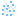
#
{kind=link}
This node represents a force based on a 3D-noise pattern.
General#
Force activity: The force will be ignored if this is set to false.
Tether Mask Shapes: Will parent the Mask Shape to the force’s transform.
Show Force Mask: If checked, the Mask Shape is shown in the viewport in green. This can be useful to preview where your force will apply.
Mode: Select if the force will affect Volume, Particles, or both.
Position: The relative position of the noise force. This will pan the entire force field as a whole.
Rotation: The relative orientation of the noise force. This will rotate the entire force field as a whole.
Scale: The relative scale of the noise force. A bigger scale makes lower frequency noise.
Seed: The seed of generated noise. Every seed gives a unique noise pattern.
Octaves: How many layers of noise to generate. Higher values will add more detail to the noise but will be more expensive.
Lacunarity: The lucanarity determines how the frequency changes for each octave. A lucanarity of 2.0 will double the frequency every octave.
Gain: The gain determines how to amplitude changes for each octave. A gain larger than 1.0 will amplify the noise every octave, while a value less than 1.0 will dampen it.
Amplitude: The initial amplitude, or strength, of the noise.
Bias: The bias will shift the generated noise values.
Animation speed: Animation speed determines how quickly the generated noise will change in time.
Curl noise: Toggling this will generate curl noise rather than random noise. Curl noise has the property that it does not further compress the fluid and works against the pressure, and generates more natural movement.
Transform#
- Import control: If checked, the Import control pin will show up on the Force: Noise node, allowing the transformation to be parented to a mesh or bone from the Import node. In the Control tab of the Import node, you can check a bone or mesh to create an output pin on the node. This pin can be connected to the Import control pin.
Position: Displays the incoming position of the parent mesh or bone.
Rotation: Displays the incoming rotation of the parent mesh or bone.
Position, Rotation, Scale Inherit: You can toggle the X, Y, and Z buttons to specify what attribute and axis of the incoming transformation will be inherited/used. All buttons are turned on (blue) by default, inheriting all transformations.
Position, Rotation offset: Add to or subtract from the incoming position and rotation values. These values are also changed when using the transform and rotation manipulators in the viewport.
- Import control: If checked, the Import control pin will show up on the Force: Noise node, allowing the transformation to be parented to a mesh or bone from the
Position: The relative position of the noise force. This will pan the entire force field as a whole.
Rotation: The relative orientation of the noise force. This will rotate the entire force field as a whole.
References to the common tabs:
Masking can be very useful for Noise forces. For example, you can only add detail in the temperature by setting that mask to 100% and leave the other attributes at 0%
Visual Visualize the velocities added by this force. This only works when the node is connected, active, and selected.
Point  #
#
This node represents a point force field.
General#
Force activity: The force will be ignored if this is set to false.
Tether Mask Shapes: Will parent the Mask Shape to the force’s transform.
Show Force Mask: If checked, the Mask Shape is shown in the viewport in green. This can be useful to preview where your force will apply.
Mode: Select if the force will affect Volume, Particles, or both.
Repel Strength: How strongly to repel away from or attract towards the point. (Positive values will push away from the point. Negative values will pull towards the point.)
Additional pressure rate: Additional pressure rate. Positive values will explode, negative values will implode.
- Falloff: Falloff means the force will only affect the simulation from a specified distance from the force position. Using this reduces the force a lot so you might have to adjust Repel Strenght to compensate.
None: No falloff the force is affecting the whole simulation.
Linear: Force intensity falls off linearly.
Quadratic: Force falls off over a quadratic (exponential) curve. Which is a quicker decrease in force than linear.
- Cubic: Force falls off over a cubic curve. Linear, Quadratic, Cubic and Custom expose the following parameters:
Inverse falloff: If true, the force will be reduced as you come near the force center.
Falloff percent: What remains of the force when you are above the given distance.
Falloff distance: Distance of the falloff in meters.
Falloff inner bound: Distance from the force center in meters where the forces are maximal.
- Custom: Force falls off over a specified exponent.
Falloff exponent: Ramp exponent of the falloff, higher values mean a quicker force extinction. This can be seen as the gamma value of a curve.
Transform#
- Import control: If checked, the Import control pin will show up on the Force: Point node, allowing the transformation to be parented to a mesh or bone from the Import node. In the Control tab of the Import node, you can check a bone or mesh to create an output pin on the node. This pin can be connected to the Import control pin.
Position: Displays the incoming position of the parent mesh or bone.
Position, Rotation, Scale Inherit: You can toggle the X, Y, and Z buttons to specify what attribute and axis of the incoming transformation will be inherited/used. All buttons are turned on (blue) by default, inheriting all transformations.
Position, Rotation offset: Add to or subtract from the incoming position and rotation values. These values are also changed when using the transform and rotation manipulators in the viewport.
- Import control: If checked, the Import control pin will show up on the
Position: Center of the point force field in 3D-space.
References to the common tabs:
Chaos Add more randomness and variation to the force field.
Masking Mask the force based on certain components.
Visual Visualize the velocities added by this force. This only works when the node is connected, active, and selected.
Vector Field  #
#
This node represents a force based on a vectorfield made in VectorayGen
Asset#
Filename: Specify the filename and location of the .fga file.
Force activity: The force will be ignored if this is set to false.
Tether Mask Shapes: Will parent the Mask Shape to the force’s transform.
Show Force Mask: If checked, the Mask Shape is shown in the viewport in green. This can be useful to preview where your force will apply.
Mode: Select if the force will affect Volume, Particles, or both.
Strength: The magnitude of the vector field relative to the original vector magnitude. A negative value will flip the direction. If the effect is too extreme, try lowering this value.
Size: The size of the vector field bounding box in simulation space. Note that the original bounds are ignored.
Transform#
- Import control: If checked, the Import control pin will show up on the Force: Vector Field node, allowing the transformation to be parented to a mesh or bone from the Import node. In the Control tab of the Import node, you can check a bone or mesh to create an output pin on the node. This pin can be connected to the Import control pin.
Position: Displays the incoming position of the parent mesh or bone.
Rotation: Displays the incoming rotation of the parent mesh or bone.
Position, Rotation, Scale Inherit: You can toggle the X, Y, and Z buttons to specify what attribute and axis of the incoming transformation will be inherited/used. All buttons are turned on (blue) by default, inheriting all transformations.
Position, Rotation offset: Add to or subtract from the incoming position and rotation values. These values are also changed when using the transform and rotation manipulators in the viewport.
- Import control: If checked, the Import control pin will show up on the
Position: The position of the center of the vector field bounding box in simulation space. (Note that the original bounds are ignored.)
Rotation: The rotation of the vector field, in degrees, along the X, Y, and Z axes, respectively.
Scale: The relative scale of the vector field force.
Chaos Add more randomness and variation to the force field.
Masking Mask the force based on certain components.
The Info tab holds information about the loaded .fga file.
Visual Visualize the velocities added by this force. This only works when the node is connected, active, and selected.
Vorticles  #
#
Vorticles are a sort of particles that can be put into the simulation to add pushing and rotating forces to it.
Main#
Force activity: Activate vorticles in the simulation. Unchecking this will turn the force off.
View vorticles: View vorticles when the node is selected.
Mode: Select if the force will affect Volume, Particles, or both.
Vorticles seed: Seed used for the random generation of the vorticles.
Vorticles count: Current vorticles count. Higher values means more vorticles in the scene.
Transform#
The transformations apply to the spawn shape defined in the Position spawn shape parameter in the Position tab. The controls in the Transform tab have no effect if the Position spawn shape is set to FillVolume.
- Import control: If checked, the Import control pin will show up on the Force: Vorticles node, allowing the transformation to be parented to a mesh or bone from the Import node. In the Control tab of the Import node, you can check a bone or mesh to create an output pin on the node. This pin can be connected to the Import control pin.
Position: Displays the incoming position of the parent mesh or bone.
Rotation: Displays the incoming rotation of the parent mesh or bone.
Position, Rotation, Scale Inherit: You can toggle the X, Y, and Z buttons to specify what attribute and axis of the incoming transformation will be inherited/used. All buttons are turned on (blue) by default, inheriting all transformations.
Position, Rotation offset: Add to or subtract from the incoming position and rotation values. These values are also changed when using the transform and rotation manipulators in the viewport.
- Import control: If checked, the Import control pin will show up on the
Position: Position of the vorticle spawn shape.
Rotation: Orientation of the vorticle spawn shape.
Position#
- Position spawn shape: Spawn shape (emitter shape) of the vorticles.
Fill Volume: Vorticles spawn randomly within the bounding box.
- Box: Vorticles spawn within a box shape. The position of this box is specified with the Position parameter in the Main tab.
Size: Size of the box containing the vorticles.
Spawn on surface: Spawn vorticles only on the surface of the box.
- Sphere: Vorticles spawn within a sphere shape. The position of this sphere is specified with the Position parameter in the Main tab.
Radius: Radius of the sphere containing the vorticles.
- Line: Vorticles will spawn along a line shape. The position of this line is specified with the Position parameter in the Main tab.
Length: Length of the line on which the vorticles will spawn.
- Spiral: Vorticles will spawn along a spiral shape. The position of this spiral is specified with the Position parameter in the Main tab.
Radius: Radius of the spiral.
Revolutions: Number of full revolutions (full circles) done in the spiral.
Height: Height of the spiral. A value of 0 will give a circle.
Pinching: Pinching of the spiral. Higher values will taper off the top of the spiral. Negative values will widen the top of the spiral.
Randomize position: Randomization of the vorticles positions. For example, when using with a line shape this will determine how much the spawn location of each vorticle can deviate from the line shape in each axis.
Advection intensity: Intensity of how much the vorticles move along with the simulation.
Orientation#
Orientation damping: Smoothen the orientation changes of the vorticles. A value of 100% gives a static orientation.
- Orientation spawn type: Method of orienting the vorticles:
- Constant: Orientation is set to a constant value.
Orientation: Constant orientation of the vorticles. For example, setting X and Y to 0 and Z to one will have all the vorticles point upwards.
- Shape Aligned: Vorticles will be oriented along the Position spawn shape.
Orientation axis: Vorticle axis used to orient along the Position spawn shape.
- Point to Center: Vorticles will be oriented to point towards the center.
Orientation axis: Vorticle axis used to orient towards the center.
Random: Fully randomises the vorticles orientations.
Invert direction: Inverts the force direction of the vorticles.
Randomize direction: Randomises the force direction of the vorticles.
Randomize orientation: Randomization of the orientation. Higher values will have the vorticles orientation deviate further from anything it’s aligned to.
Life#
Min, Max life: Vorticles minimum and maximum lifetime.
Force#
Force attentuation: Decay curve of the force generated by the vorticles according to the distance to their center. Value of 1 is a linear decay from center (100%) to outer bound (0%). Value higher than 1 is decaying more quickly, applying less forces overall. Values lower than one is decaying more slowly, applying more force overall.
Min, Max twist velocity: Minimum and maximum spinning velocities added to the simulation by the vorticles. Negative values will spin in the other direction.
Min, Max push velocity: Vorticles minimum and maximum push velocity. This will push along the main axis of the vorticle (positive values will push in one direction, negative values in the other direction).
Size#
Vorticles min, max radius: Vorticles minimum and maximum radius (size).
- Min max usage: Method of ditributing the different sized vorticles over a Line or Spiral Position spawn shape:
Random: Vorticles sized are randomly distributed.
Ramp Up: Vorticles are distributed from small to large.
Ramp Down: Vorticles are distributed from large to small.
Ramp Up Down: Vorticles are distributed from small to large towards the middle and then from large to small towards the end.
Ramp Down Up: Vorticles are distributed from large to small towards the middle and then from small to large towards the end.
Visual Visualize the velocities added by this force. This only works when the node is connected, active, and selected.
Ground 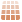
#
{kind=link}
This is where all the settings are related to the ground plane you see in the scene.
- Ground material: Type of ground used in the scene:
None: Ground plane is disabled.
Grid: Grid pattern with the center lines colored red and green to represent the X and Y axis.
Checkerboard: Ground plane is set to a checkerboard pattern.
Noise: Ground plane is set to a noise pattern.
Uniform Color: Ground plane is set to a uniform color.
Ground distance: Distance between the simulation bounding box floor and the ground, in meters.
Ground lit radius: Radius of the lit area on the ground.
Ground shadow: Intensity of the shadow on the ground.
Ground material scale: Scale of the ground pattern in tile per meter. This scales both the grid, checkerboard, and the noise pattern.
Ground primary color: This sets one of the colors using Checkerboard, one of the colors using Noise, and the color when using Uniform Color or Shadow Catcher.
Ground secondary color: This sets the other color using Checkerboard or Noise.
Import #
This node is used to import assets from other 3d-packages.
For more info read our FBX, OBJ, ABC Import page!
Asset#
Filepath: Specify the filename and location of the .obj, .fbx, or .abc file containing your 3D assets. You will want to store these files locally. If you are loading your imported mesh from a network drive this can cause instability in simulations and renders. For Alembic, only the OGAWA format is supported!
Animations#
- Animate: If checked, the animation will be played provided the model contains animations.
Animations: Here, you can pick the desired animation layer provided you have multiple.
Transform#
Pivot: Offset applied to the position of the import before scaling.
Master scale: Large scale multiplier, used to easily scale very large or very small scenes into a fitting size.
Scale: Regular scale option for fine-tuning the size of the imported assets.
Position: Offset applied to the position of the imported asset.
Rotation: Offset applied to the rotation of the imported asset.
Scale and center to fit: This button can be used right after loading the asset to automatically fit the objects scale and position into the Embergen scene.
Auto pivot: Automatically sets the Pivot parameter so that the pivot point sits at the center on the imported mesh shapes.
Playback#
Loop animation: If on, the animation will replay forever.
- Override FPS: If true you can define the frames per second. If you set this to the Timestep which is 60 by default your export should line in your target application. You can also set the FPS to 30 and leave the Timestep at 60 for example, but then you will have set your export frame strides to 2 for things to line up in your target application.
FPS: Frames per second replacing the one read by the importer.
Frame delay: The number of frames by which to delay the animation. A negative value will advance the animation.
Duration offset: The number of frames by which to modify the duration of the animation. It can be useful for getting perfectly looping animations by trimming the end of the animation.
Simulation#
Thickness emission, collision: Thickness of the mesh used for emission or collisions.
Rendering#
Albedo: Main color of the imported mesh shader.
Volumetric shading: If on, the meshes will be displayed using the volumetric shading used for the smoke, otherwise a more classical shading is used. The Albedo parameter still applies.
Lighting bias (vol.): Lighting bias is the offset used from the surface to access the lighting map, working like the shadow bias you have in realtime engines.
Render all: If checked, all polygons will be rendered.
Render mask 1,2,3,4: If checked, the polygons specified in the corresponding Mask tab will be rendered. This can be useful for clearly seeing a specific mask result.
Control#
Animations of your imported file can be used to drive the transformations of shapes, forces, emitters, colliders or the simulation domain.
This can be set up in the following way:
Select a bone or mesh you want to inherit the tranformations of using the checkbox.
A control output pin with the corresponding name will be added to the
Import node.Check the Import control parameter on the node you want to parent to your bone or mesh. This parameter is found in the Transform tab unless you want to control the simulation domain, then it’s found in the Domain tab.
The Import control input pin will appear on the node.
Connect the new control on the
Import node to the Import control pin on the target node.If needed, you can tweak the position, orientation, and what aspects of the transformation will be inherited using the parameters below the Import control parameter on the target node.
Mask#
Using masking you can ouput specific parts of your import to a Mask output pin.
- Mode: Define the method of masking the import:
Meshes: This will give a checklist containing all the seperate objects of the imported 3d-scene. These objects can be added to the mask by checking their boxes.
Bones: This will give a checklist containing all the skeletonal joints (if you have any) of your 3D-scene. By checking a joint the assiciated vertices will be added to the mask.
Vertex color - red, green, blue, alpha: Add the vertices with this color to the mask. Vertex colors can be assigned to vertices in most 3d-software.
Reference Value: Minimum vertex color value of the channel above to be included in the mask.
Light  #
#
Collection of nodes to light up your scene!
Ambient 
#
{kind=link}
Light coming from all directions. This light can be used to represent the sky.
Active: If unchecked, this light will be ignored.
Ambient Intensity: The intensity/strength of the light. Negative values will darken.
Ambient color: The color of the light.
Occlusion color: Occlusion color used in sky occluded area. Shadow color for areas not exposed to the sky.
Occlusion shadow intensity: Occlusion intensity of the ambient color. Higher values will result in more occlusion for the area not exposed to the sky.
Inherit sky color: Inheritance of sky color based on the specified Atmosphere color in the Skybox node and the angle of the Directional light.
Position: The position of the light in 3D-space.
Directional #
{kind=link}
Light coming from a specified direction. This light can be used to represent the sun.
Active: If unchecked, this light will be ignored.
- Direction definition: Method of determining the direction.
- Angles: This will reveal the Azimuth and Elevation parameters for controlling the direction by specifying the angles.
Azimuth: The rotation of the light. It’s like controlling the sun’s direction.
Elevation: The elevation of the light. It’s like controlling the time of day.
- Positions: This will reveal the Source position and Target position parameters for controlling the direction by specifying two points on a directional line.
Source position: The position of the light source in 3D space.
Target position: The position of the light target in 3D space.
Light intensity: The intensity/strength of the light. Negative values will darken.
Light color: The color of the light.
Inherit sun color: Inheritance of sun color. Depending on the amount of Inherit sun color the light will change color based on its angle.
Point  #
#
Light radiating from one point in space in all directions.
Active: If unchecked, this light will be ignored.
Position: The position of the light in 3D space.
Light intensity: The intensity/strength of the light. Negative values will darken.
Light color: The color of the light.
Bulb size: Size of the light bulb. Negative values will give a more diffuse look.
Spot 
#
{kind=link}
This node represents a spotlight. Light coming from one point in space pointing in a specified direction.
Active: If unchecked, this light will be ignored.
Position: The position of the light in 3D space.
- Direction definition: Method of determining the direction.
- Angles: This will reveal the Azimuth and Elevation parameters for controlling the direction by specifying the angles.
Azimuth: The rotation of the light.
Elevation: The elevation of the light.
- Positions: This will reveal the Target position parameter for controlling the direction by specifying the point to where the spotlight should be aimed.
Target position: The position of the light’s target in 3D space.
Light intensity: The intensity/strength of the light. Negative values will darken.
Light color: The color of the light.
Cone angle: The opening of the light cone in degrees. Higher values will light up a bigger area.
Penumbra angle: The angle of the penumbra in degrees. Higher values increase softness on the edges of the casted circle shape.
Bulb size: Size of the light bulb.
Modulators  #
#
Most parameters in Embergen can be controlled by an external modulation node.
All modulators have an Output tab where you can manage all connected parameters and set their value ranges to which the percentages of the modulator nodes refer.
For details on how to use these nodes and the Output tab, check out our Modulating Parameters page!
Constant  #
#
Generates a signal of a constant value which can be sent to pin-exposed parameters of other nodes.
Allows synced parameters between nodes by connecting one  Mod: Constant node to multiple pin exposed parameters.
Mod: Constant node to multiple pin exposed parameters.
- Mode: Specifies the type of value parameter below. Different modes are more suitable to control different types of parameters.
Single Component: Sends a single value out as a signal. Useful for connecting to slider parameters. The ranges in the output tab are mapped from -100% for the minimun value to 100% for the maximum value.
Unsigned Single Component: Sends a single value out as a signal. Useful for connecting to slider parameters. The ranges in the output tab are mapped from 0% for the minimun value to 100% for the maximum value.
Multi Component: Sends three different values out as a signal. Useful for connecting to 3-vector parameters like position, rotation or color. This mode can also be useful for connecting to range sliders where X will be mapped to the min value and Y to the max value. The ranges in the output tab are mapped from -100% for the minimun value to 100% for the maximum value.
Checkbox: Sends a single boolean value as a signal. Useful for connecting to checkboxes. Unchecked is mapped to unchecked or, if not connected to a checkbox, the minimum value, and checked is mapped to checked or the maximum value.
Value: Value controlling the connected parameters with the specified mapping within the, in the Output tab, specified range.
Oscillator #
Uses an oscillator to generate a waveform the signal of which can be sent to pin-exposed parameters of other nodes.

- Waveform X,Y,Z: When linked to a parameter with a single value only Waveform X is relevant. When modulating a position or rotation parameter X,Y,Z is linked to X,Y,Z. When modulating a color parameter X,Y,Z is linked to R,G,B. There are the following types of waveforms:
None: No oscillation, the value for the waveform will be constant over time and set to the value specified in the Base parameter.
Sine: Sinewave, smooth oscillation back and forth.
Saw: Oscillation over a modulo curve, the value will abruptly reset to the same value every cycle.
Pulse: Abruptly switches from a top value to a bottom value back and forth.
Noise: Values change in an irregular way.
Random Saw: Values will rise to a random number every cycle. The teeth of the saw all have different heights.
Random Pulse: Abruptly switches from a random top value to a random bottom value back and forth.
Random Step: Steps to a random constant value every cycle.
- Custom: Customized waveform to be repeated every cycle.
Custom Waveform: Horizontal axis: time of each cycle, Vertical axis: Value. Using the Curve Generator… in the right-click menu can be especcially useful here. For more information on how to edit the modulation curve, check out our Modulation Curve section!
Base: Center value for the parameter. This can be used to offset the whole oscillation curve.
Frequency: Number of times per second the pattern is repeated. Number of cycles per second. Higher values will make the values change faster.
Phase: Temporal offset of the waveform.
Amount: Intensity of the waveform. Higher values will have the oscillated values deviate further from the base.
Attenuation: Intensity multiplier for all the waveforms.
Cycle  #
#
Outputs a constantly linearly increasing (or decreasing) value for the full range of the output parameter. This node can be used to quickly set up automatic rotations.
- Mode 1,2,3: When linked to a parameter with a single value only Mode 1 is relevant. When modulating a position or rotation parameter 1,2,3 is linked to X,Y,Z. When modulating a color parameter 1,2,3 is linked to R,G,B. There are the following modes:
None: Value is kept at 0
Normal: Values incline over a saw-wave.
Inverted: Values decline over a saw-wave.
Frequency: Frequency of the cycles. When used for rotations, higher values make objects spin faster.
Phase: Temporal offset of the saw-wave.
Math  #
#
Outputs a signal as a result of mathematical expressions.
Input A: Sliders which can be referenced in the expressions by using the variable a. Specific components can be accessed by using a.x, a.y, and a.z
Input B: Sliders which can be referenced in the expressions by using the variable b. Specific components can be accessed by using b.x, b.y, and b.z
Input C: Sliders which can be referenced in the expressions by using the variable c. Specific components can be accessed by using c.x, c.y, and c.z
Expression 1: Expression for the first component
Expression 2: Expression for the second component
Expression 3: Expression for the third component
Time Shift  #
#
Shifts the signal of a modulator backward or forward in time. Typically used on the output signal of a  Mod: Oscillator or
Mod: Oscillator or  Mod: Cycle node.
Mod: Cycle node.
Temporal Offset: The amount of time in seconds the input signal is offset by.
Temporal Scale: Time remapping for the input signal. For example, a value of 200% makes an input sinewave oscillate twice as fast.
Combine  #
#
Combines the signal from two modulator nodes.
Mode: Means by which to combine the two modulator signals.
Mix: Mix of the two inputs: -100% is the first input only, 100% is the second input only; 0% is an equal mix of the two.
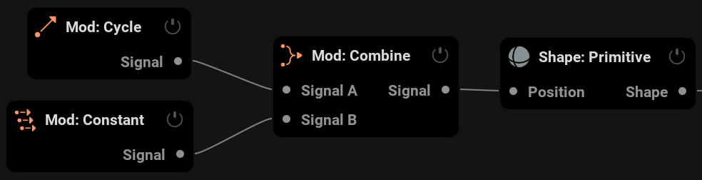
ADSR  #
#
The ADSR Node allows you to map a specific parameter to an ADSR Envelope.
ADSR stands for Attack, Decay, Sustain, Release. Once the ADSR node “Active” checkbox is on, the envelope will be engaged, starting with the ‘attack’. Attack is the amount of time it takes for the base value of the assigned parameter to reach its peak value, dictated by the Amount %. Decay is the duration of time it takes to get from the peak value to the Sustain value. Sustain is the percentage inbetween the Base and Amount value, and this value will remain the same until the ADSR node is innactive. Once the Active binary is turned off, you will ‘release’ the envelope. Release is the time it takes for the Sustain value to return to the Base value.
The way you would typically want to use this is to link a MIDI node to the Active parameter in the ADSR node. This way, each time you engage the midi note it also follows the ADSR envelope curve. However you can also keyframe this parameter in the timeline, or use an oscillator modulator node to oscillate the activation.
Active: triggers the envelope. when enabled, the envelope is engaged (ADS); when disabled, the envelope is disengaged (R).
Base: Set by the bounds of the controlled parameter, this is the lowest value of the curve represented by a percentage from -100% to 100%
Amount: Set by the bounds of the controlled parameter, this is the highest value represented by a percentage from -100% to 100%
Attack: The amount of time it takes in seconds for the base value of the assigned parameter to reach its peak value, dictated by the Amount.
Decay: The duration of time it takes in seconds to get from the peak value to the Sustain value.
Sustain: Sustain is the percentage in between the Base and Amount value, and this value will remain the same until the ADSR node is inactive.
Release: Once the Active checkbox is turned off, you will ‘release’ the envelope. Release is the time it takes in seconds for the Sustain value to return to the Base value.
Slope: Using the slope, you can determine the ramp of the Attack, Decay and Release curves. The ramp can be previewed in the Envelope preview.
MIDI  #
#
Generates a signal for modulating parameters based on pressing buttons on a MIDI controller like a keyboard.
To use this you first need to check Settings/Preferences/General/Enable MIDI support
Component count: Toggle between 3 outputs (for position, rotation, or rgb) or a single output.
MIDI Learn: Press this and than use a desired MIDI key to specify the control.
- Midi event: Select the type of events that will modify the values.
- Note Trigger
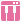
Add a spike on the signal by hitting a button. Note: MIDI note to use to trigger the signal. This can be set manually here, but it’s easier to use the MIDI Learn button to set it automatically.
- Note Trigger
- Control Change
 Control the signal using a MIDI slider or dial.
Control the signal using a MIDI slider or dial. Control ID: MIDI button or dial to use to control the signal. This can be set manually here, but it’s easier to use the MIDI Learn button to set it automatically.
- Control Change
Base: Center value for the parameter.
Amount: Signal modifier amount for the value. Higher values mean bigger signal changes.
Decay rate: Decay rate of the value after triggering a note. Higher values mean the signal returns quicker to the base value.
Channel: For use with multiple MIDI controllers. Each MIDI controller can be set to a specific channel on the hardware. This parameter can be used to identify specific MIDI controllers. A value of -1 will use all MIDI controllers.
Attenuation: Amount multiplier for all signals.
Last midi message: Displays the last MIDI inputs, like a note or slider change. This can be helpful for debugging or when setting the Note or Control ID manually.
{kind=link}
Scene #
This is where visual postprocessing effects can be applied to the scene.
Tonemapping#
This is where a basic color correction can be applied to the scene.
Gamma: Gamma correction applied to convert the image from HDR to LDR.
Exposure: Exposure of the scene. The default value is 1.0, you can under or overexpose depending on your scene global lightness.
Color vibrance: Vibrance of the colors. Higher than zero values will emphasize the tint of the colors. Lower than zero values can desaturate and even invert the colors.
HDR Tonemapping: Tonemapping curve used to convert from the linear High Dynamic Range.
Tonemap dithering: Intensity of the tonemap dithering. Increasing this value will help to get rid of color banding in the scene.
Contrast: Intensity of the color contrast correction.
Brightness: Intensity of the color brightness correction.
Saturation: Intensity of the color saturation correction.
Colors#
Channels swizzling: Swizzling of the channels of the rendering, basically changing the order of the R, G, and B components.
Bloom Intensity: Intensity of the bloom post effect. This will blur the brightest pixels in the scene and add them back in the scene.
Bloom Radius: Radius of the blur filter used for the bloom post effect.
Vignetting#
Vignetting will darken the borders of the image putting more emphasis on the center.
Width: Width of the vignetting in pixels. Higher values mean a softer vignette.
Offset: Offset towards the outside of the picture for the vignetting in pixels.
Roundness: Roundness of the vignetting.
Intensity: Intensity of the vignetting. Higher values mean a darker border.
Style#
- Rendering style: Style of rendering used in the scene:
Realistic: No filtering is applied.
- Pixelized: reduces the rendering resolution of the scene. This will reveal the following parameters:
Pixel size: Size of the pixels in pixels. Higher values give a more pixelixed look.
Alpha limit: Limitation of the translucency of the cells during the raymarching process.
Alpha sharpening: Sharpening of the alpha used during the raymarching process. 0% is regular alpha, 100% is sharper alpha.
- Edge Detect Filter: Highlights the edges giving a stylized effect. This will reveal the following parameters:
Display background: If active, this will display the background when nonrealistic effects are selected.
Edge color: Color of the edge.
Edge ramp: Limit of the edge detection, higher values will detect more edges.
Detection type: Edge detection method. Alpha based method will only detect outer borders. Sobel will detect more edges within the fluid.
Base color: Intensity of the base color (brightness of everything except the edges). The edges will be added on top of this.
- Chromatic Abberation: Adds different distortions from the edges of the image to every color channel giving a rainbow like effect to the edges. This will reveal the following parameters:
Distortion: Distortion intensity of the chromatic aberration. Higher values will amplify the effect.
iterations: Number of iterations used in the chromatic aberration. Higher values can reduce stepping when using high Distortion values.
- Kuwahara: A Kuwahara filter is applied which makes blobs of similar colors. This will reveal the following parameters:
Kuwahara intensity: Intensity of the Kuwahara filtering. 0 gives a very clean look. High positive or negative will give more details and sharp edges.
- Anisotrophic Kuwahara: This Kuwahara method can also generate black edges. This will reveal the following parameters:
Flow smoothness: Smoothness of the flow, higher values will align the values on a larger scale, lower values will align the values more locally.
Kuwahara radius Amount of black strokes.
Kuwahara anisotropy: Anisotrophy of the colored blobs.
- Colored Thin Strokes: Watercolor looking style. This will reveal the following parameters:
Flow smoothness: Smoothness of the flow, higher values will align the values on a larger scale, lower values will align the values more locally.
Strokes length: Length of the strokes/lines. Higher values will increase the length/extention of the lines/strokes, lower values will shorten them. Higher values give more stylized results.
- Thick Strokes: Greyscale stylization showing large contrasted strokes following the flow of details in the image. Working better when you have a lot of details, like when rendering particles. This will reveal the following parameters:
Flow smoothness: Smoothness of the flow, higher values will align the values on a larger scale, lower values will align the values more locally.
Strokes width: Width of the ‘paint’ strokes, low value will display denser, smaller strokes, larger values will display thicker, larger strokes.
Strokes length: Maximal length of the ‘paint’ strokes.
Contrast: Strokes contrast. Higher values can give better defined strokes.
Luminosity Strokes brightness.
- High Contrast Strokes: Black and white stylization showing large contrasted strokes following the flow of details in the image. This will reveal the following parameters:
Flow smoothness: Smoothness of the flow, higher values will align the values on a larger scale, lower values will align the values more locally.
Strokes thickness: Thickness of the ‘paint’ strokes.
Strokes length: Maximal length of the ‘paint’ strokes.
Contrast: Strokes contrast. Higher values can give better defined strokes.
- Colored Thick Strokes: Combination of anisotropic Kuwahara and thick strokes stylization. This will reveal the following parameters:
Flow smoothness: Smoothness of the flow, higher values will align the values on a larger scale, lower values will align the values more locally.
Kuwahara radius Amount of black strokes.
Kuwahara anisotropy: Anisotrophy of the colored blobs.
Strokes length: Maximal length of ‘paint’ strokes.
Contrast: Strokes contrast. Higher values can give better defined strokes.
Luminosity Strokes brightness.
Strokes width: Width of the ‘paint’ strokes, low value will display denser, smaller strokes, larger values will display thicker, larger strokes.
RGB, Hue, Value, Saturation quantization: Number of possible values for the RGB components, hue, luminosity, or saturation of the scene colors. A value of 64 means no quantization.
Quantization dither: Amount of dithering used to compensate the quantization.
Dithering mode: Dithering pattern used.
Translucency limit: Determines how the Translucency sharpening is applied. Lower values limit the sharpening towards the most opaque parts of the volume giving a more subtle result. Higher values will boost the densities overall giving a cartoon type look.
Translucency sharpening: Sharpening of the translucency of the smoke/flames/fuel during the raymarching process. Higher values mean more sharpening.
- Remapping style: Method of mapping the inputted Color ramp to the image. This is done after all post-processing.
None: No remapping done.
- Greyscale To Colorramp: With this method, the colors will be mapped from left to right on the ramp (dark to light) representing the luminance. This will reveal the following parameters:
Dithering type: Dithering pattern used.
Dithering intensity: Intensity of the dithering pattern. 0 gives no dithering, values above 1 give an even more stylized effect.
Pattern size: Size of the dithering pattern.
Remap ramp: Gamma correction applied to the Color Gradient. A value of 1 means a linear interpolation.
- Use As Palette: With this method, the colors will be mapped to the most similar color available in the Color Gradient.
Weight channels: If active, this will weigh the RGB channels based on their luminosity.
Shading #
{kind=link}
This node contains all parameters related to the shading/lighting.
Lighting#
- Advanced parameters: This will reveal advanced parameters in this tab and the Scattering tab. It will also add the AO (adv) tab. The advanced parameters for this tab are:
Volumetric shadow intensity: Intensity of shadow.
Shapes shadow intensity: Intensity of shadows cast on shapes.
Shadow density clamping: Maximum density used for the shadowing.
Shadowing sharpness: Sharpness of the lighting/shadowing. Higher values will give more contrast between light and shadows.
Lighting anisotropy: Defines if the lighting is influenced by the direction of view. Low values ensure a constant lighting whatever direction the camera is looking at, higher values will increase the shading luminosity when the camera is pointing at the light source through the smoke.
Ambient occlusion: Ambient occlusion will calculate how exposed each voxel is to ambient lighting and darken the areas with little exposure.
Extinction color: Color of the shadows.
Smoke shadow density: Intensity of shadows cast on smoke.
Smoke shadow intensity: Lower values let the light go through the smoke reducing the shadow intensity.
Scattering#
Direct light contribution: Amount in which the direct light (all lights except ambient lights) affects the smoke. Higher values give brighter smoke.
Flames contribution: Amount in which the flames light up the smoke.
Particles contribution: When particles are set to Emissive or Combustion and Inject light in scattering is checked in their Rendering tab, this parameter will control the intenity if the light injected by the particles.
Scattering radius: Propagation radius of the scattering. Higher values will result in the light bleeding further into the smoke.
Scattering occlusion: Occlusion/shadowing of the scattering. Higher values give darker and more contrasting shadows.
The following parameters are only shown with Advanced Parameters checked in the Lighting tab:
Light attenuation: Multi octave phase function attenuation.
Light contribution: Multi octave phase function contribution.
Phase attenuation: Multi octave phase function phase attenuation.
Lighting anisotropy: Approximation of the scattering phase function. Lower values will spread more evenly the scattering, higher values will increase the scattering when looking through the smoke to the light direction.
Octave count: Multi octave phase function octave count.
Shadow scattering: Scattering distance of the shadowing in meters.
Shadow softness: Softness of the shadow. Higher values mean more diffuse shadows.
Smoke scattering intensity: Intensity of the light scattering inside the smoke.
Shapes scattering intensity: Intensity of the light scattering on shapes.
Ground scattering intensity: Intensity of the light scattering on the ground.
Scattering occlusion attenuation: Accumulated occlusion decreases over distance.
Scattering tinting: Scattering extinction color. This will define how intense the scattering will be on a per-component basis.
Cloud powder effect: Powder effect multiplier. Attenuates the scattering when entering the cloud. This will reduce highlights on the smoke.
AO (adv)#
Ambient occlusion will calculate how exposed each voxel is to ambient lighting and darken the areas with little exposure.
This tab is only revealed if the Advanced parameters parameter is checked in the Lighting tab. .. video:: _static/videos/AO.mp4
- presentation:
- float:
right
- width:
300
AO active: Activate the ambient occlusion.
AO overall intensity: Intensity of the overall ambient occlusion.
Direct light occlusion scale: Intensity of the ambient occlusion in the direct lighting.
Direct light max occlusion: Maximum color attenuation due to the AO. A value of 100% will have a black area where the occlusion is intense.
Emissive occlusion scale: Intensity of the ambient occlusion in the emissive.
Emissive max occlusion: Maximum color attenuation due to the AO. A value of 100% will have a black area where the occlusion is intense
AO extinction tinting: Extinction color of the ambient occlusion.
AO radius: Higher values will extend the darkening effect outwards from the cavities.
Emissive Masking#
Masking Active: This will mask off the emissive/flames based on the density of the smoke.
Density reference: Reference density used by the masking, density values close to this will be used as a mask.
Width: Transition width from the Density reference. Higher values will give a softer mask.
Masking ramp: Gamma interpolation within the transition width. A value of 1 will transition linearly over the transition width.
Masking intensity: Intensity/transparency of the masking. A value of 0 will turn the masking off.
Low frequencies: Low frequencies details contribution to masking.
Medium frequencies: Medium frequencies details contribution to masking.
High frequencies: High frequencies details contribution to masking.
Flames#
Render flames: Flames rendering active.
For detailed information on how to use the histogram, please check out our Histogram page.
Coloring remap range: Range for the color remapping. Temperature range on which the color is mapped.
Coloring remap ramp: Gamma interpolation from Min to Max on the Temperature range. Higher values will shift the color mapping more to the left side of the color gradient and lower values will shift the color mapping more towards the right side of the gradient.
Clamp the remapping: Clamping of the values within the given range of values.
Shaping by flames: Intensity of the flames component used to shape the flames. Higher values will give brighter flames.
Shaping by density: Intensity of the density component used to shape the flames.
- Flames coloring: Technique used to colorize flames. The dropdown menu has the following options:
- Blackbody: Use the blackbody mapping to temperature color scheme. With this method, you can’t pick the fire color. This will expose the following parameter:
Blackbody ramp scale: Blackbody color ramp scaling. Higher values mean brighter flames.
- Color Ramp: Use an adjustable color ramp based on one color. This will expose the following parameters:
Fire color: Color of the fire.
Red ramp: Red component ramp value.
Green ramp: Green component ramp value.
Blue ramp: Blue component ramp value.
- Exposed Color Gradient: With this method, the color of the flames is controlled by a Color Gradient node. To connect this node, connect the Color output pin on the Color Gradient node to the Fire Color input pin on the Shading node.
- Flames translucency: Allows translucency on the hottest parts of the flames. Checking this will reveal the following parameters:
Translucency level: Temperature above which flames are translucent.
Translucency width: Width of the transition between opaque and translucency.
Flames density min limit: Minimum visible density of the flames. Any flames density under that threshold is ignored at the rendering.
Flames density scale: Opacity/density of the flames. Higher values result in brighter flames.
Flames opacity: Flames opacity. Higher values result in brighter flames.
Smoke#
Render smoke: Smoke rendering active.
Remap by temperature: Remap the smoke color using temperature instead of density. This will also change the Coloring remap range Max value to 4500.
For detailed information on how to use the histogram, please check out our Histogram page.
Coloring remap range: Range of density or temperature on which the color will be mapped.
Coloring remap ramp: Gamma interpolation from Min to Max on the range. Higher values will shift the color mapping more to the left side of the color gradient and lower values will shift the color mapping more towards the right side of the gradient.
- Smoke coloring: Technique used to colorize the smoke. The dropdown menu has the following options:
- Single Color: The Smoke color parameter will be used to set a single smoke color.
Smoke color: Color used for the smoke.
- Color Ramp: Use an adjustable color ramp based on two colors. This will expose the following parameters:
Min color: Color used for thin/light smoke.
Max color: Color used for thick/dense smoke.
Red ramp: Red component ramp value.
Green ramp: Green component ramp value.
Blue ramp: Blue component ramp value.
- Exposed Color Gradient: With this method, the color of the smoke is controlled by a Color Gradient node. To connect this node, connect the Color output pin on the Color Gradient node to the Smoke Color input pin on the Shading node.
Smoke density min limit: Minimum visible density of the smoke. Any smoke density under that threshold is ignored at the rendering.
Smoke density clamp: Maximum smoke density allowed at rendering, any density above that threshold is clamped to that value.
Smoke density scale: Opacity/density of the smoke.
Fuel#
In most simulations, fuel is ignited shortly after it’s emitted. Therefore it tends to have very little density in the scene and is hard to see. The visibility can be boosted by setting the Fuel density min limit to 0% and the Fuel density scale to a high value like 1000%.
- Render fuel: Fuel rendering active. This will expose the following parameters:
Fuel color: Color of the fuel.
Fuel density min limit: Minimum visible density of the fuel. Any fuel density under that threshold is ignored at the rendering.
Fuel density scale: Opacity/density of the fuel.
Rendering#
Raymarch sharpening: Apply a sharpening filter at raymarching time. The data is sharpened when traversing the 3D data to the renderer. It’s doing this with sub-voxel accuracy bringing out small details and highlighting edges. Note that, contrary to the sharpen filter in the Volume node, this doesn’t export with your VDB.
Smoke, Flames, Temperature sharpening: Intensity of the sharpening effect on the Smoke, Flames, or Temperature channels.
Shapes  #
#
Primitive #
{kind=link}
This node represents a shape primitive.
General#
Shape Activity: The shape will be ignored if this is set to false.
- Type: The type of the primitive used for this shape:
- Sphere
 Ball shape which can only be scaled uniformly.
Ball shape which can only be scaled uniformly. Radius: The radius of a Sphere shape in meters. Higher values give a bigger sphere.
Fill motion gaps: Replaces the sphere shape with a rounded cone shape with its first sphere being the shape position and scale at the previous frame and its second sphere being the shape position and scale at the current frame. This fills the gaps between frames created by fast motion and can reduce stepping in the emission.
- Sphere
- Capsule
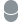
Cylinder like shape with a spherical top and bottom: Length: The length of a Capsule shape in meters.
Radius: The radius or thickness of a Capsule shape.
- Capsule
- Torus
 Donut-like shape controlled by two radiuses:
Donut-like shape controlled by two radiuses: Minor Radius: The major radius of a Torus shape, i.e. the distance to the center of the main ring.
Major Radius: The minor radius of a Torus shape, i.e. the radius of the circle extruded along the main ring.
- Torus
- Tube
 Cylinder with a hollow inside:
Cylinder with a hollow inside: Radius: The outer radius or thickness of a Tube shape.
Height: The height or length of a Tube shape.
Cap One: Close bottom.
Cap Two: Close top.
Thickness: The thickness of a Tube shape.
- Tube
- Cone
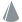
Cylinder with adjustable top and bottom radius: Radius One: The radius of the Cone shape’s first cap (bottom).
Radius Two: The radius of the Cone shape’s second cap (top).
Height: The height of a Cone shape.
- Cone
- Ellipsoid
 Sphere which is scalable in three axes:
Sphere which is scalable in three axes: Radius: The radiuses of an ellipsoid shape along the X, Y, and Z-axis.
- Ellipsoid
- Spiral Spring like shape spiralling up.
Radius: Radius of the widest part of the spiral in meters.
Revolutions: Amount of times the curve goes over a full circle before reaching the top. Higher values will give a more dense shape.
Height: Height of the Spiral shape in meters scaling from the bottom.
Pinching Tapering of the Spiral shape in percentage. Higher values will scale the top of the spiral down making it a more conical shape. Negative values will scale the top of the spiral up.
{kind=link}
{kind=link}
{kind=link}
{kind=link}
{kind=link}
{kind=link}
Transform#
- Import control: If checked, the Import control pin will show up on the Shape: Primitive node, allowing the transformation to be parented to a mesh or bone from the Import node. In the Control tab of the Import node, you can check a bone or mesh to create an output pin on the node. This pin can be connected to the Import control pin.
Position: Displays the incoming position of the parent mesh or bone.
Rotation: Displays the incoming rotation of the parent mesh or bone.
Position, Rotation, Scale Inherit: You can toggle the X, Y, and Z buttons to specify what attribute and axis of the incoming transformation will be inherited/used. All buttons are turned on (blue) by default, inheriting all transformations.
Position, Rotation offset: Add to or subtract from the incoming position and rotation values. These values are also changed when using the transform and rotation manipulators in the viewport.
- Import control: If checked, the Import control pin will show up on the Shape: Primitive node, allowing the transformation to be parented to a mesh or bone from the
Position: The local position of the shape.
Rotation: The rotation, in degrees, of the shape.
Burst  #
#
This node can quickly spawn in various shapes. This is especially useful for making good-looking explosion shapes.
Main#
Shape Activity: The shape will be ignored if this is set to false.
Amount of shapes: Amount of shapes to be spawned within each burst.
Random seed: Seed used for the randomization. A different number gives a different looking burst.
- Emission type: Define if the emission is a single burst or an endless repetition of bursts:
- Single Burst:
Trigger: When changed from false to true, this will trigger the burst. Using keyframes you can specify a point in time to start the burst.
- Repeated Bursts:
Burst duration: Duration of the whole burst animation.
Burst Interval: Time in seconds between each burst. A value of zero will give a continuous burst.
Range of shapes duration: Minimal and maximal time to do a complete expansion of a shape. Animation length for the growing shape.
Transform#
This tab determines the origin and orientation of the distribution shape set up in the Positions tab.
- Import control: If checked, the Import control pin will show up on the Shape: Burst node, allowing the transformation to be parented to a mesh or bone from the Import node. In the Control tab of the Import node, you can check a bone or mesh to create an output pin on the node. This pin can be connected to the Import control pin.
Position: Displays the incoming position of the parent mesh or bone.
Rotation: Displays the incoming rotation of the parent mesh or bone.
Position, Rotation, Scale Inherit: You can toggle the X, Y, and Z buttons to specify what attribute and axis of the incoming transformation will be inherited/used. All buttons are turned on (blue) by default, inheriting all transformations.
Position, Rotation offset: Add to or subtract from the incoming position and rotation values. These values are also changed when using the transform and rotation manipulators in the viewport.
- Import control: If checked, the Import control pin will show up on the
Position: Position of the distribution shape in 3D-space.
Rotation: Orientation of the distribution shape.
Positions#
- Distribution shape: Emission shape for the spawned shapes:
Box Random: Shapes will randomly spawned within a box shape.
Box Evenly Distributed On X,Y,Z: Shapes will be spawned randomly within the box shape but evenly distibuted over the specified axis. This can reduce cluttering in the specified axis.
Ellipsoid Random: Shapes will randomly spawned within a ellipsoid (spherical) shape.
Ellipsoid Evenly Distributed: Shapes will be evenly distributed within the ellipsoid (spherical) shape.
Extend on X,Y,Z-axis: Extend the spawn area on the specified axis. This determines the spawn cube or ellipsoid scale. Higher values mean more space between the shapes.
Shapes#
- Trigger order: Order in which the shapes will spawn:
Evenly Distributed: Shapes will be triggered evenly over the emitter shape.
Random: Shapes will be triggered randomly over the emitter shape.
Center To Outside: Shapes will be triggered first in the center of the emitter shape then moving outwards.
Outside to Center: Shapes will be triggered first at the borders of the emitter shape then moving inwards.
X,Y,Z Axis Upward: Shapes will be triggered from the negative side of the axis to the positive side of the axis.
X,Y,Z Axis Downward: Shapes will be triggered from the positive side of the axis to the negative side of the axis.
Simultaneous: All shapes will be triggered at once.
Initial radius: The radius/size range of spawned shapes.
- Size distribution: How the different sized shapes will be distributed in space:
Evenly Distributed: Different sized shapes are distributed evenly over the emission shape.
Random: Different sized shapes are distributed randomly over the emission shape.
Center To Outside: Large shapes will spawn in the center small shapes will spawn at the outside of the emission shape.
Outside To Center: Large shapes will spawn on the outside small shapes will spawn in the center of the emission shape.
X,Y,Z Axis Upward: Small shapes will appear at the negative side of the axis, large shapes will spawn at the positive side of the axis.
X,Y,Z Axis Downward: Small shapes will appear at the positive side of the axis, large shapes will spawn at the negative side of the axis.
Range of expansion: Minimal and maximal expansion of a shape. Higher values mean shapes can grow bigger. This is also the range for the Remapping curve.
- Shape type:
Sphere: Default shape spawning spheres.
- Cylinder:
Thickness is relative: With this checked the length of the cylinder will be relavive to the scaling of the shapes.
Relative thickness: (only available when Thickness is relative is checked) Multiplier for the cylinder length. Higher values give taller cylinders.
Absolute thickness (only available when Thickness is relative is checked) Fixed thickness (height,length) of all cylinders.
Shape rotation: Rotation of the cylinders.
Rotation randomness: Randomization for the cylinder rotations. Higher values will have each cylinder differ more from the general rotation.
- Ring:
Thickness is relative: With this checked the length of the ring will be relavive to the scaling of the shapes.
Relative thickness: (only available when Thickness is relative is checked) Multiplier for the ring length. Higher values give taller rings.
Absolute thickness (only available when Thickness is relative is unchecked) Fixed thickness (height,length) of all rings.
Shape rotation: Rotation of the rings.
Rotation randomness: Randomization for the ring rotations. Higher values will have each ring differ more from the general rotation.
- Hollow Sphere: Looks like spheres but hollow inside. This way you can have larger shapes with a more specified amount of fluid emission.
Width is relative: With this checked the width of the sphere walls will be relavive to the scaling of the shapes.
Relative width: (only available when Width is relative is checked) Multiplier for the sphere walls width.
Absolute width (only available when Width is relative is unchecked) Fixed width of all sphere walls.
- Spike:
Thickness is relative: With this checked the thickness of the spike will be relavive to the scaling of the shapes.
Relative thickness: (only available when Thickness is relative is checked) Multiplier for the spike thickness. Higher values give thicker spikes.
Absolute thickness (only available when Thickness is relative is unchecked) Fixed thickness of all spikes.
Shape rotation: Rotation of the spikes.
Rotation randomness: Randomization for the spike rotations. Higher values will have each spike differ more from the general rotation.
Velocity injection: Amount of force to be injected into the simulation due to the scaling of the shapes. This value works together like a multiplier with the Velocity transfer parameter in the Forces tab in the Emitter node.
Particles 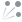
#
{kind=link}
This node represents a shape based on a particle system.
Main#
Shape activity: The shape will be ignored if this is set to false.
Position: The local position of the mesh shape.
Rotation: The local orientation of the mesh shape, in degrees per axis of rotation.
Seed: Each unique seed (number) will give a unique randomization of the particles.
Transform#
This tab determines the origin and orientation of the particle emitter.
- Import control: If checked, the Import control pin will show up on the Shape: Particles node, allowing the transformation to be parented to a mesh or bone from the Import node. In the Control tab of the Import node, you can check a bone or mesh to create an output pin on the node. This pin can be connected to the Import control pin.
Position: Displays the incoming position of the parent mesh or bone.
Rotation: Displays the incoming rotation of the parent mesh or bone.
Position, Rotation, Scale Inherit: You can toggle the X, Y, and Z buttons to specify what attribute and axis of the incoming transformation will be inherited/used. All buttons are turned on (blue) by default, inheriting all transformations.
Position, Rotation offset: Add to or subtract from the incoming position and rotation values. These values are also changed when using the transform and rotation manipulators in the viewport.
- Import control: If checked, the Import control pin will show up on the Shape: Particles node, allowing the transformation to be parented to a mesh or bone from the
Position: Position of the particle emitter in 3D-space.
Rotation: Orientation of the particle emitter shape. This can be useful to determine the direction of the particles.
Emission#
Emission: Switching this to on will trigger the emission of a burst of particles when Spawn type is set to Single Burst
- Spawn type:
- Single burst: Needs a toggle Off/On for the emission to start. Only spawns one burst of particles.
Burst size: Amount of particles to be spawned per burst.
- Multi burst: Restart the particle system at a given time interval. Spawns a burst of particles every time interval.
Burst size: Amount of particles to be spawned per burst.
Time between bursts: Time between two consecutive bursts.
- Continuous: Continuously emit particles at a given rate.
Spawn rate: Emission rate in particles per second.
- Initial position Type:
Center Position: Particles will only spawn from the center position point of the Particles node.
- Range: Particles will spawn within a box shape.
Initial pos range: Specifies the emission box scale in all axis.
Position on surface: If on, initial position (spawn position) is only on the surface of the emission box, otherwise the position is inside the box.
- Sphere: Particles will spawn within a sphere shape.
Initial pos radius: Initial position sphere radius. Radius of the emission sphere.
Position on surface: If on, initial position (spawn position) is only on the surface of the emission sphere, otherwise the position is inside the sphere.
Life range: Life range of particles in seconds. Lower values mean particles disappearing earlier.
Motion#
- Initial speed Type: Initial speed randomization type.
- Velocity Range: Initial speed for each particle is randomly picked between the min and max speed per axis.
Min speed: Minimal initial speed of the particles in meters per second.
Max speed: Maximal initial speed of the particles in meters per second.
Extreme speed: Use extreme speeds only. The direction is still specified with the Min Speed and Max Speed parameters, but all the speeds are set the to the maximum.
- Velocity Cone: Particles will be shot out in a conical shape.
Cone direction: Orientation of the cone. For example, with X and Y at 0 and Z at 1 the cone is pointed straight up. With both X and Z at 1, the cone is pointed at a 45 degree angle.
Cone spreading: Opening of the cone in degrees. Higher values will have particles shoot out in a wider range of directions.
- Velocity From Position: Particles shoot outwards based on their initial positions. This works with Initial position type in the Emission tab set to Range or Sphere. If it’s set to Center Position particles will just fall straight down.
Min speed: Minimal initial speed of the particles.
Max speed: Maximal initial speed of the particles.
Speed scale: Speed scale multiplier. Higher values result in all the particles going faster.
Dragging range: Drag of the particles. This slows particles down over time. Higher values mean more dragging.
- Modulate drag by life: Modulate the dragging of particles based on their life.
Interpolation mode: Method of interpolating between curve points in the Drag scale by life curve.
Drag scale by life: The horizontal axis is the life of the particle (left birth, right death), the vertical axis is the amount of drag.
Force injection: Percentage of particles velocity injection in simulation. This value works together like a multiplier with the Velocity transfer parameter in the Forces tab in the Emitter node.
Gravity: Gravity influence of the particles. Lower values mean more downward force.
Min, Max init rotational speed: The rotational speed for each particle is picked within this range. Rotation speed will add a rotational force from the particles into the simulation. This is multiplied by a number of factors. If any of these are 0 you won’t get any rotational force added into your simulation. Make sure to check these when you’re not getting any or the desired result. The particle size, the rotational speed specified in this parameter, Force injection and Velocity transfer specified in the Forces tab of the connected Emitter node.
Advection intensity: Amount of influence of the simulation on the particles. This means particles will move along with effects caused by other emitters and are affected by forces.
- Modulate advection by life: Modulate the advection intensity of particles based on their life.
Interpolation mode: Method of interpolating between curve points in the Advection scale by life curve.
Advection scale by life: The horizontal axis is the life of the particle (left birth, right death), the vertical axis is the amount of advection.
Tightness intensity: Tightness intensity of the particles. High tightness uses the velocity field as velocity, low tightness uses it as acceleration.
- Modulate tightness by life: Modulate the tightness intensity of particles based on their life.
Interpolation mode: Method of interpolating between curve points in the Tightness scale by life curve.
Tightness scale by life: The horizontal axis is the life of the particle (left birth, right death), the vertical axis is the amount of tightness.
Chaos range: The amount of added chaotic motion to the particles is randomly picked within this range in meters per second. Higher values mean more chaotic motion (turbulence).
- Modulate chaos by life: Modulate the chaotic movements of particles based on their life.
Interpolation mode: Method of interpolating between curve points in the Chaos scale by life curve.
Chaos scale by life: The horizontal axis is the life of the particle (left birth, right death), the vertical axis is the amount of chaos.
Shape#
- Render with capsules: Render particles with capsules to fill inbetweens. This results in more emission and nicer trails since particles will be longer.
Capsules stretching: Stretching of the capsule based on the velocity. Higher values mean longer particles.
Size range: The size of the particles in meters is randomly picked within this range.
- Modulate size by life: Modulate the particles size based on their life.
Interpolation mode: Method of interpolating between curve points in the Size scale by life curve.
Size scale by life: The horizontal axis is the life of the particle (left birth, right death), the vertical axis is the size.
Collisions#
- Collisions: Particles can collide with either the shapes specified with the Collider node or with the sides of the bounding box. This can be done with the following methods:
Ignore: No collisions are calculated, particles will go straight through.
Kill: Particles will be killed (disappear) when colliding.
Kill And Generate Impacts: Particles will be killed (disappear) and will spawn an impact shape when colliding. An impact shape is a sphere shape that pops up at the place of collision. This can be used to emit from to create effects specifically in impact. The impact shapes are outputted from the Impact shape pin on the Particles node.
Collide: Particles will bounce off when colliding.
Collide And Generate Impacts: Particles will bounce off and will spawn an impact shape when colliding.
Friction: Friction of the particles on the colliders. Higher values will slow the particles down when interacting with a collision surface.
Bounciness: Bounciness of the particles. Higher values will bounce more.
Velocity transfer: Transfer of the velocity from the collider to the particles. This can give more realistic results when using moving colliders.
Impact decay time: Duration of the impact shape animation.
Impact scale: Scale of the impact shapes.
Impact scale by velocity: Higher speed particles will generate bigger impacts when colliding. The scale is multiplied with the velocity. This means the impact scale can get quite big and you might need to adjust the Impact scale parameter down to compensate.
Impact life reduction: Percentage of remaining particle life to be removed upon impact. A value of 100% means partciles will die on collision.
Impact life reduction by velocity: Higher speed particles will lose more life expectancy when an impact happens.
Noise  #
#
This node represents an emitter shape based on a noise field.
Shape activity: The shape will be ignored if this is set to false.
Scale: Scale of the noise. Higher values give bigger shapes/details.
Seed: Each seed is giving a unique noise.
Octaves: Number of layers of noise, more octaves give a more detailed noise.
Lacunarity: Ratio of scale between two consecutive octaves.
Gain: Ratio of amplitude between two consecutive octaves. A value of 0 wont show the extra octaves, a value of 2 will only show the latest extra octave.
Amplitude: Amplitude of the resulting noise.
Bias: Bias of the noise surface. Negative value gives more holes, Positive values are fuller.
Animation speed: Animation speed of the noise. Zero is a static noise.
Transform  #
#
Transforms the incoming shape.
Note that this node can have multiple input shapes making it also useful to easily combine shapes.
Shape Activity: Unchecking this will turn the incoming shapes off.
- Import control: If checked, the Import control pin will show up on the Shape: Transform node, allowing the transformation to be parented to a mesh or bone from the Import node. In the Control tab of the Import node, you can check a bone or mesh to create an output pin on the node. This pin can be connected to the Import control pin.
Position: Displays the incoming position of the parent mesh or bone.
Rotation: Displays the incoming rotation of the parent mesh or bone.
Position, Rotation, Scale Inherit: You can toggle the X, Y, and Z buttons to specify what attribute and axis of the incoming transformation will be inherited/used. All buttons are turned on (blue) by default, inheriting all transformations.
Position, Rotation offset: Add to or subtract from the incoming position and rotation values. These values are also changed when using the transform and rotation manipulators in the viewport.
- Import control: If checked, the Import control pin will show up on the
Position: The position offset applied to all incoming shapes in meters.
Rotation: The rotation offset applied to all incoming shapes in degrees.
Blend  #
#
This node blends multiple shapes into one shape.
Shape activity: The shape will be ignored if this is set to false.
- Type: The connected shapes are blended and using the selected operator:
Union
 Merges Shape A and B together.
Merges Shape A and B together.- Smooth Union Merges Shape A and B together. With the option of smoothing out the connection area.
Smoothness: Smoothness of the blending, higher values increase the connection area.
- Smooth Union
- Subtraction
 Subtract Shape B from Shape A (cut Shape B out of Shape A)
Subtract Shape B from Shape A (cut Shape B out of Shape A) Bias: This offsets the surface of the cut.
- Subtraction
- Smooth Subtraction Subtract Shape B from Shape A (cut Shape B out of Shape A) With the option of smoothing out the connection area.
Smoothness: Smoothness of the cutout, higher values increase the connection area.
Bias: This offsets the surface of the cut.
- Smooth Subtraction
Intersection Results in the intersecting area between Shape A and B.
- Add
 This operator is meant to put cavities in Shape A using a Noise shape for Shape B.
This operator is meant to put cavities in Shape A using a Noise shape for Shape B. Range: Range of values used from the Noise shape. Higher values give smoother and slightly bigger cavities.
Bias: This offsets the surface of the cutout. Higher values give smaller cavities.
Amplitude: Cavity depth. Negative values will invert the cavities into bumps.
- Add
- Morph
 Morph Shape A into Shape B
Morph Shape A into Shape B Weight: Blending weight : 0 is Shape A, 1 is Shape B.
- Morph
{kind=link}
Modifier  #
#
This node allows the modification of a shape.
It should be connected like this in the Node Graph.
{kind=link}
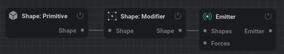
Shape activity: The shape will be ignored if this is set to false.
- Type: The modifier type.
- Rounding: Adds an extra thickness to a shape, making it rounder.
Thickness: Extra thickness added to the shape. Higher values mean a bigger and rounder shape.
- Golf ball: Adds a pattern of dents on the surface of the shape.
Frequency: Frequency of the dents. Higher values mean more dents. Lower values mean bigger dents.
Amplitude: Intensity of the effect. Higher values mean deeper dents. Negative values will give a pattern of bumps.
- Invert: This will turn all empty space into shape voxels and turn all shape voxels into empty space.
Offset: Higher values will shrink the shape leaving a smaller hole. Negative values will grow and round the shape leaving a bigger hole.
- Shell: This will turn the shape into a shell instead of solid voxels making it hollow inside.
- Direction: The direction in which the shell should expand from the shape surface.
Inward: Expands the shell towards the inside of the shape. You can’t see the shape change from the outside using this method.
Centered: Expands the shell equally towards the inside and the outside of the shape.
Outward: Expands the shell towards the outside of the shape.
Thickness: Thickness of the shape surface.
Simulation #
This node is where all the settings related to the global physics of the simulation are.
Domain#
Check out our Voxels section for an explanation on voxels.
Current Size: Displays the calculated amount of voxels.
Voxel count: This determines both the voxel resolution of your simulation and how large the bounding box will be. The space occupied by a voxel is defined by the voxel size parameter.
Voxel size: Size of a voxel cell in meters.
Upscaling: Upscaling factor of the simulation: This will increase the simulation detail but will keep the shape of the original. Options are size by x2 (8x memory usage for data & velocity), x3 (27x memory usage), and x4(64x memory usage).
Fast upscaler: Upscaling without advection, just rough upscale from low res. Only the masking phase is done in high res. Can be useful for refining fire without adding unwanted detail.
Zero position on X, Y, and Z: Origin from were to count the voxels.
For example, when using Min for Zero position on Z the origin for that axis will be at the bottom of the bounding box. This means when adding voxels they’ll be added to the top of the bounding box. If Zero position on Z would be set to Center voxels would be added to the top and bottom equally.
- Import control: If checked, the Import control pin will show up on the Simulation node, allowing the bounds position to be parented to a mesh or bone from the Import node. In the Control tab of the Import node, you can check a bone or mesh to create an output pin on the node. This pin can be connected to the Import control pin.
Position: Displays the incoming position of the parent mesh or bone.
Position, Rotation, Scale Inherit: You can toggle the X, Y, and Z buttons to specify what attribute and axis of the incoming transformation will be inherited/used. All buttons are turned on (blue) by default, inheriting all transformations.
Position offset: Add to or subtract from the incoming position and rotation values. These values are also changed when using the transform and rotation manipulators in the viewport.
- Import control: If checked, the Import control pin will show up on the
Bounds Position: Position of the domain that determines the bounds of the simuation in 3D-Space. Changing or animating this can be useful to fit your simulation better around your object to optimise performance.
Simulation#
- Simulation Mode: The simulation mode:
Combustion: The combustion mode has smoke, fuel, temperature, and flames. Fuel is burnt to produce heat/temperature and incomplete combustion produces smoke.
- Colored Smoke: has only density and RGB color, no temperature. This method will remove the Combustion tab and add the following parameters:
Color Diffusion Speed: (Found in the Diffusion tab) Diffusion of the color, expressed in percentage from neighbor values. Higher values mean more rapid color blending. Negative values can have a sharpening effect.
- Velocity, Voxel Advection method: Determines how the how the velocity or the voxel densities (smoke, flames, fuel, temperature) are advected. As in the method of transporting this data from one voxel to the next.
Linear: Faster than Cubic, but will result in smearing and smoothing of the velocity, which manifests as artificial dissipation of velocity and suppression of vortices. (less detail and fluffyness)
Cubic: Will be slower, but will be much higher quality, reducing artificial dissipation and preserves vortices better. There might be some artifacts in the Cubic mode if there is a lot of noise, high frequency injection patterns like particles, the Vorticity is cranked up too high, or if Advection Accuracy is first order.
Prevent Velocity, Voxel Overshoots:
Advection accuracy: Determines what order of accuracy to use when backtracing during advection. Lower orders are faster than higher orders but less accurate.
Advection offset: Allows the advection part of the simulation to scroll the data with a constant velocity. A value of 1 results in 1 voxel per second movement. This can work very well to simulate a wind direction.
Time Control#
- Looping Mode: The current looping mode of the simulation:
No Looping: Simulation moves forward in time normally.
- Loop Simulation: Will try to turn the simulation into a loopable effect looping between the loop bounds visualized in pink in the graph editor. The loop bounds can be moved and extended using dragging in the Timeline Editor. This option will expose the following parameters:
Blending Mode: Looping simulation is blending between 2 consecutive time intervals. 1st interval and 2nd interval allow you to see those intervals isolated, Dynamic Blend continues simulation after the inject, Static Blend is doing a simpler blend of the two intervals.
Blending Curve: Curve that is used to weigh the first and the second interval in the blend. Linear is recommended for Static Blend, Quintic is recommended for Dynamic Blend.
- Loop Simulation: Will try to turn the simulation into a loopable effect looping between the loop bounds visualized in pink in the graph editor. The loop bounds can be moved and extended using
- Repeat Simulation: Repeat the simulation upon reaching the Repeat Frame. This option will expose the Repeat Frame parameter.
Repeat Frame: What frame to reset the simulation at in Repeat Simulation looping mode. This is indicated with a moveable yellow line in the Timeline Editor.
{kind=link}
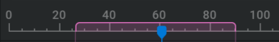

Freeze Simulation: Enabling this parameter will freeze the simulation state while still rendering and progressing the timeline.
Timestep: Internal framerate of the simulation. Technically not a retiming slider but it can be used for slightly speeding up the simulation, by decreasing this value or slowing down the simulation by increasing this value.
Projection#
Projection manages the incompressibility of the volumes.
Hourglass Filter Strength: The hourglass filter will attempt to remove spurious noise patterns that might arise in the velocity field, such as checkerboard or alternating patterns that might occur in the presence of strong noise and vorticity injections. These patterns are generally removed without impacting the overall large-scale velocity and should result in a higher quality baseline to layer forces and vorticity on top of. In some cases it might be preferable to leave this off, as the artificial noise patterns that this filter will attempt to remove might offer some kind of “detail”, but it is generally recommended to keep this on before adding details from other sources.
- Reuse Projection Solution: Reuses the projection result from the previous time step, generally resulting in a much more efficient solver when it can be appropriately applied. Can generally be safely toggled for setups where there are no abrupt or extreme divergence variations. Situations where it will NOT be appropriate include:
Powerful combustion/explosions
Rapid changes in pressure injection
Fast colliders
A good sign to turn it off is if the fluid as a whole starts “wobbling”
Prevent Velocity Leakage: Prevents the velocity from leaking outside of closed containers and pipe-like shapes with thin walls. Toggling this will switch to a more expensive algorithm that always accurately resolves the colliders, but at a fairly high computational cost.
Collider Removal Amplifier: Higher values will more aggressively remove voxel data that happen to end up inside colliders. Too small values might end up amplifying smoke data near collider walls, while large values will result in excess dissipation. Usually there’s a nice tradeoff in between that’s hard to automatically detect, but is possible to adjust by hand when appropriate.
- Control Mode:
Simple: Hides the advanced projection parameters. Best solution for most scenarios as the Projection Quality dropdown menu options also change these parameters for you.
- Advanced: Reveals the advanced projection parameters. These parameters require technical knowledge of fluid solvers.
Projection Iterations: The number of times the projection algorithm is applied in succession.
Multigrid Cycles: The number of V-cycles in the Multigrid solver. A single iteration is typically sufficient, but in some edge cases it’s useful to increase it. Changing this value has a larger impact on performance than the other settings.
Solve Iterations: The number of iterations on the coarsest grid in the Multigrid solver. Typically not too sensitive beyond a certain context-dependent threshold in terms of quality and performance. A value between 16 and 32 is a good ballpark value to use.
SOR Iterations: The number of SOR iterations performed after the multigrid part of each projection iteration. This helps enforcing the collider boundary conditions near the collider surfaces.
Correction Iterations: The number of Vertex-stencil correction iterations performed at the end of each projection iteration. This helps reduce some divergence hotspots that are otherwise not targeted by either the multigrid or SOR parts of each projection iteration.
Smooth weight: The (over) relaxation weight used by the pre and post smooth iterations during the multigrid part of the projection. A value slightly bigger than 100% improves convergence slightly.
Solve weight: The (over) relaxation weight used by the solver iterations at the coarsest part of the multigrid part of the projection. Values closer to 200% will converge faster, but too large values might be unstable.
SOR weight: The (over) relaxation weight used by the SOR iterations. Values closer to 200% will converge faster, but too large values might be unstable.
Projection Quality: Higher quality settings enforces incompressibility better, which is equivalent to better velocity conservation (things move further), better vorticity conservation (less susceptible to noise degradation) and smoke conservation (smoke doesn’t artificially dissipate as much). More noticeable in high noise and high vorticity scenarios, or when using a solid floor and strong downward forces like large smoke weight. Standard is a good default. Higher settings result in slower performance.
The different presets in the Projection Quality dropdown menu change the settings of the parameters that are exposed when setting the Control Mode parameter to Advanced. Changing one of these settings manually will set the projection quality to Custom.
Combustion#
- Advanced parameters: With this checked, more parameters and tabs will be exposed for more specific control over the simulation. The following parameters will be exposed in this tab:
Advect fuel: Defines if the fuel will be advected like the smoke and temperature or will just stay on the emitter.
Oxygen in fuel: Percentage of oxygen pre-mixed in the fuel. The combustion requires an equal part of fuel and oxygen to ignite the fuel, the premix will ensure that the fuel will always be able to partly burn.
Oxygen in flames (*): Oxygen in flames, allowing flames to burn more quickly.
Combustion ignition temp: Temperature (in Kelvin) at which the fuel will ignite if there is enough fuel and enough oxygen available.
Combustion temp gain: Temperature (in Kelvin) generated by the combustion of the fuel.
Combustion flames gain: The amount of flames generated for each unit of fuel that burns.
Combustion fuel loss: For each unit of fuel that burns, how much fuel should disappear per frame.
Combustion gas release: Gas released at combustion increases locally the pressure and expands the volume of flames/smoke.
Extinction flames loss: Amount of flames lost for each unit of flames reaching extinction temperature.
Extinction smoke temp: Temperature under which flames are converted to smoke.
Extinction smoke gain: Amount of smoke gained for each unit of flames reaching extinction temperature.
Progressive ignition: A value of 0% will enforce a strict test of the combustion temperature, higher values will spread the combustion over a wider range of temperatures.
Progressive extinction: A value of 0% will enforce a strict test of the extinction temperature, higher values will spread the extinction over a wider range of temperatures.
Generated smoke: Quantity of smoke generated by combustion.
Flame intensity: Higher values mean more flames coming from the combustion.
Expansion: Expansion/explosivity of the combustion.
Dissipation#
Temperature, Velocity, Smoke, Flames, Fuel dissipation (*): The rate of reducing per second. A value of 50% means half the temperature remains after 1 second, 25% of it remains after 2 seconds, etc. So multiplication by 0.5 every second.
Smoke, Flames, Fuel dissipation (-): Amount to be subtracted every second. So with a value of 1, 1.0 or 100% will be subtracted in every voxel every second. This method is much more aggressive for dissipation than the multiplication method.
Diffusion#
Smoke, Temperature, Fuel, Flames, Velocity Diffusion Speed: 3D gaussian blurring over time on the channels. Higher values have a softening effect on the channels and can give an illusion of smaller scale. Velocity Diffusion Speed is also known as viscosity.
Diffusion strength “scales” proportionally with the time step and inversely proportionally with the grid spacing squared.
If you halve the time step, the diffusion effect is halved (less time to spread per step), and if you halve voxel size, the diffusion strength is four times larger.
Vorticity#
Vorticity intensity: The vorticity amplification factor. This will boost every small-scale vortices in the simulation. This adds rotational forces to the simulation breaking it up.
Large vorticity intensity: The large vorticity amplification factor. This will boost every large-scale vortices in the simulation. This will give a more swirly look with smoke and fire rolling over itself.
Velocity mask: Influence of velocity on vorticity amplification. Larger velocities will generate more vorticity.
Temperature mask: Influence of temperature on vorticity amplification. Higher temperatures will generate more vorticity.
Smoke mask: Influence of smoke density on vorticity amplification. Denser smoke will generate more vorticity.
Constant mask: Base value of vorticity amplification (independent of velocity, temperature, and smoke density).
Temperature Range: Masks the vorticity within the specified temperature range using a Range Slider. This can be useful to, for example, apply vorticity only in the hottest parts of the simulation.
Smoke Range: Masks the vorticity within the specified smoke range using a Range Slider. This can be useful to, for example, apply vorticity only in most dense parts of the smoke leaving the thin smoke unaffected.
Vorticity ramp: Spreading of the vorticity confinement, higher values reduce the vorticity on areas with a lower curl amount.
Force#
Force Tightness: With a tightness of 0%, forces that are plugged into the Forces pin of the Simulation node are added to the current simulation, with a tightness of 100% the extra forces are completely replacing the existing forces.
Buoyancy: Adds a force going up based on the temperature of the cell, expressed in percentage of gravity per 1000 Kelvin.
Smoke weight: Adds a force going down based on the density of smoke in the cell, expressed in percentage of gravity per unit.
Fuel weight: Adds a force going down based on the density of fuel in the cell, expressed in percentage of gravity per unit.
Gravity multiplier: Overall gravity in the simulation.
Solid Ground, Ceiling, Wall -X, Wall +X, Wall-Y, Wall+Y: Toggle to make the specified bound solid and divert the flow. (Enables ground, ceiling, wall -X, wall +X, wall-Y, wall+Y collision.)
Wind#
Wind direction: The direction in which the wind blows.
Wind dir randomization: Wind direction randomization range. A value of 0 has no randomization.
Wind speed: How fast the wind blows.
Wind chaos: Amount of noise added to the wind force.
Shredding#
Shredding intensity: Intensity of the shredding. Flames under a given temperature are sped up and flames above a given temperature are slowed down, resulting in small flames detaching for the main burning area.
Shredding temp threshold: Shredding temperature threshold. Flames above that temperature are slowed down, flames under that temperature are sped up.
Shredding threshold width: Shredding neutral zone width. Flames within that neutral zone centered around the temperature threshold are not affected by shredding.
Mask#
Mask shape: The shape that will be used to mask out the simulation. What is masked here is removed from the simulation.
Mask intensity: The intensity of the mask. A higher value will remove more smoke/fuel/flame/temperature per frame.
Mask distance: Thickness of the mask. Higher values will remove smoke/fuel/flame/temperature deeper in the simulation.
Visual#
In this tab, you can setup arrows to visualize the velocities. This is useful for debugging and understanding what the velocities look like in 2D or 3D space.
Enable gizmo: If checked, the arrow visualization and the paremters for it will be turned on.
Persistent Gizmo: Always display the gizmo when enabled, even if the
Simulation node is not selected.- Visual mode: Visualization mode for the force gizmo.
- 3D Grid: Places the arrows in a 3D grid visualizing the whole force at once.
- Arrow type: Select the way the arrows are represented. One or the other may give more visual clearance in different scenarios.
Arrow: 3D arrows with controllable thickness.
Line: 2D arrows made of lines. The Arrow thickness parameter won’t have an effect on this option.
- Arrow color: Method of coloring the arrows.
Mono: Solid color for all arrows.
RGB: Position based colors.
Heatmap: Colors based on the magnitude of the force.
Arrow thickness: Thickness of the 3D arrow shape.
- 2D Grid: Places the arrows on a 2D slice of the bounding box making it easier to visualize the shape of a force as arrows are not overlapping.
Axis: Determines the axis to which the visualization plane should be aligned to.
X,Y,Z plane offset: Position of the slice plane. These parameters are useful to view specific parts of the simulation.
Heatmap: If checked, the arrows will get a color assigned based on the magnitude of force. If unchecked, all arrows will have the same color.
Density: Number of arrows visible per voxel. Higher values will generate more arrows, this is useful for seeing finer detail. Lower values will generate fewer arrows, this is useful to more clearly see the directions.
Arrow size: Size multiplier for all arrows.
Arrow size scaling: Determines how the arrow size changes according to force magnitude. A value of 0 means the force magnitude multiplies the arrow size making arrows in places with little force smaller. A value of 1 means that all arrows get the same size.
Limit arrow count: Limit the displayed arrow count to be a maximum of 250000 to render in a reasonable time.
Particles#
This tab holds some global settings for the particles created by Particles nodes.
Particle max limit: Maximal amount of GPU particles allowed in Millions.
Particles HQ rendering: Quality of the rendering, HQ adds antialiasing and is significantly slower. The effect can be visible on tilted angles when using Velocity Aligned in the Particles render type parameter in the Shape tab of the Emitter: Particles node.
Grouping size: Number of particles assigned to each group.
The following parameters appear when Grouping size is not 1:
- Grouping Type: Method of regrouping the paricles.
- Follow: Particles will be regrouped in trails.
Trail supersampling: Supersampling of the trail, divide the distance between particles. 1 means every particle is 1 frame behind the next one. 32 means there are 32 particles between each frame distance. Higher values need a higher Grouping size to keep the same trail length.
Trail color attentuation: Attenuation of the colors between different particles of the trail. 50% means every consecutive particle loses half of it’s brightness.
Trail inertia: Trail particles will continue moving along their initial speed using that intensity. The following particles inherit more velocity making the trails look more compressed and move smoother.
Trails inverted ramp: Inverts the trail inertia effect.
- Sphere: Particles will be regrouped in balls.
Sphere scale: Scale of the sphere from the original particle size. The Size limits from the Shape tab of the Emitter: Particles node dictate the scale of the particle group scaled by this percentage.
Sphere stretch: Amount of stretching of the spheres in the direction of the velocity.
Skybox #
{kind=link}
This controls the type of sky in your scene.
- Sky: Type of sky/background used in the scene:
None: Sky is disabled.
Uniform Color: Sets the sky to one color using the Background color parameter.
- Atmosphere: Mimicking a real sky. With any other option than Atmosphere, the inherit sky or sun colors won’t work for the ambient and directional light. Sky changes depending on the directional light angle. This will expose the following parameters:
Atmosphere color: Base color of the atmosphere. The other hues are relative to this.
Atmosphere Mie: Percentage of Mie scattering in the atmosphere (large particles scattering). Higher values will blur the horizon.
Atmosphere Rayleigh: Percentage of Rayleigh scattering in the atmosphere (small particles scattering). Higher values give more saturation.
- Shade: Uses a color ramp as sky. This exposes the following parameters:
Background secondary color: Color for the higher part of the sky.
Shade start pos: Start position of the shade, 0% is bottom, 50% horizon, 100% zenith.
Shade end pos: End position of the shade, 0% is bottom, 50% horizon, 100% zenith.
Background color: Primary background color. Lower part of the sky when using Shade mode.
Sky intensity: Intensity of the atmosphere. Higher values mean a brighter sky.
Volume Processing #
{kind=link}
Like pixels, voxels can undertake certain post-processing effects like sharpening. Unlike the Shading node, the Volume Processing node modifies the values within the voxels to create certain effects. These effects are also embedded when exporting VDB.
Post Process#
- Volume post process: Volume post process style. The following options are available:
None: No post processing.
- Motion Blur: Blurs the volume along it’s velocity. This will reveal the following parameters:
Motion blur intensity: Amount of motion blur. Higher values give more and longer blur.
Smoke, Temperature, Fuel, Flames style: Blurring method used per channel.
- Sharpen: This will reveal the following parameters:
Sharpen smoke, temperature, flames, fuel, colors: Sharpening of the channel. Negative values will give a blurring effect.
- Dilate: Shrink or expand the volume. This will reveal the following parameters:
Smoke, Temperature, Flames, Fuel, Colored Smoke dilate: Dilation of the channel. Higher values will expand/dilate the volume lower values will shrink/erode the volume.
Dilate softness: Higher values will dampen the dilation effect.
Post Modulation#
This tab uses modulation curves. For more information on how to use these, please check out our Modulation Curve page!
Active: If checked, the modulation will alter the component. This will also reveal the next Post Modulation tab.
- Source: The component used to compute the modulation.
Smoke, Temperature, Fuel, Flames: Modulation based on a simulation channel. This is after post-processing (like sharpen,motion blur, dilation) and post-modulation if there is another post modulation before this one.
Velocity: Modulation based on the velocity channel. This can be used to mask based on the speed of the fluid.
Vorticity: Modulation based on the vorticity channel. This can be used to add some fine detail to your effect.
Height: Modulation based on heigth ranging from bottom to top of the bounding box.
Post Processed Smoke, Temperature, Fuel, Flames: Channel after post-processing but before post-modulation.
Pre Processed Smoke, Temperature, Fuel, Flames: Channel before any processing.
Masking Shapes SDF: Uses the shapes connected to the Mask Shapes pin of the Volume node for modulation.
- Noise: 3D-noise used for modulation. This will reveal the following parameters:
Noise Seed: Each seed is giving a unique noise pattern.
Noise scale: Size of the noise pattern. Higher values give bigger shapes.
Noise Position: The local position of the center of the noise.
Noise animation speed: Animation speed of the noise pattern, a value of zero gives a static noise pattern.
Noise Octaves: Number of layers of noise used for the noise pattern. Higher values give a more detailed noise.
Noise FBM Lacunarity: The lucanarity determines how the frequency changes for each octave. A lucanarity of 2.0 will double the frequency every octave. Higher values give smaller details each octave.
Noise FBM Gain: The gain determines how to amplitude change for each octave. A gain larger than 1.0 will amplify the noise every octave, while a value less than 1.0 will dampen it. Higher values mean more contrast in the noise for every octave.
Per octave curve: Remaps the noise values. This can be useful for clipping values, or changing contrast. (add point:
click, remove point: double click, move point: drag)
- Constant: Constant value on all voxels used for modulation.
Constant Amplitude: The constant amplitude by which the target will be modulated. Intensity of the constant.
Target: The component that will be modulated/affected.
- Operator: The modulation type applied to the component:
Replace: Replace the target with the source.
Add Sub: Adds the source values to the target values. Subtracts when using a negative minumum value for Target Range
Min: Uses the lowest value from either the source or the target.
Max: Uses the highest value from either the source or the target.
Multiply: Multiplies the source values with the target values. This can be useful for masking the source out of the target.
Source Range: Range of the source before applying the modulation curve.
Target Range: Output range of the modulation curve.
Interpolation mode: Method of interpolating between points of the Remapping curve.
Remapping Curve Remaps the Source values within the Source range. (add point:
click, remove point: double click, move point: drag)Masking Source: This will mask out the created modulation effect. For example, by setting the Masking Source to the same component as the Target you can use it to dampen your modulation effect. Or you can mask your modulation based on the height, shapes, or a noise.
Slicing Mask#
Crop the visibility of your effect. Volume slicing doesn’t affect shape visibility.
Offset: Percentage of cropping inwards from the specified wall.
Width: Width of the specified slice. Higher values give a wider/softer transition.
Mask ramp: Gamma interpolation between the sliced and the not sliced part. 1 gives a linear transition.